季节内振荡调制南海北部春季海洋热浪
Intraseasonal Oscillations Modulate Spring Marine Heatwaves in the Northern South China Sea
¹中国科学院南海海洋研究所热带海洋环境国家重点实验室，中国广州；²中国科学院大学，中国北京
1State Key Laboratory of Tropical Oceanography, South China Sea Institute of Oceanology, Chinese Academy of Sciences, Guangzhou, China, 2University of Chinese Academy of Sciences, Beijing, China
要点
Key Points
在南海北部陆架区（NSCS），马登—朱利安振荡（MJO）第2和第3位相期间，海洋热浪（MHW）发生概率显著升高。
The probability of marine heatwave (MHW) occurrence increases significantly during Madden–Julian Oscillation (MJO) phases 2 and 3 in the northern shelf of the South China Sea (NSCS)
MJO通过改变南海北部陆架区的短波辐射和潜热通量来调制海洋热浪的发生。
MJO modulates the occurrence of MHWs through changing the shortwave radiation and latent heat flux in the NSCS
MJO诱发的季节内海表温度异常与低频背景增暖共同触发了破纪录的2021年海洋热浪。
MJO‐induced intraseasonal sea surface temperature anomalies and low‐frequency background warming jointly triggered the record‐breaking 2021 MHW
本文的在线版本提供补充材料。
Supporting Information may be found in the online version of this article.
作者贡献
Author Contributions
研究构思：陈明洋、陈更新。
Conceptualization: Mingyang Chen, Gengxin Chen
研究方法：陈明洋。
Methodology: Mingyang Chen
指导：陈更新、褚晓青。
Supervision: Gengxin Chen, Xiaoqing Chu
验证：陈更新。
Validation: Gengxin Chen
初稿撰写：陈明洋。
Writing – original draft: Mingyang Chen
审阅与修改：陈更新、褚晓青。
Writing – review & editing: Gengxin Chen, Xiaoqing Chu
摘要
Abstract
南海北部陆架区（NSCS）的海洋热浪（MHW）发生愈加频繁，对海洋生态系统和人类生计构成严重威胁。
Marine heatwaves (MHWs) have become increasingly frequent in the northern shelf of the South China Sea (NSCS), posing serious threats to marine ecosystems and human livelihoods.
然而，现有研究大多关注季节尺度和年际尺度的驱动因素，季节内变率的作用仍缺乏充分研究，这限制了我们预测海洋热浪的能力。
However, most existing studies focus on seasonal and interannual drivers, while the role of intraseasonal variability remains underexplored, limiting our ability to predict MHWs.
本研究考察马登—朱利安振荡（MJO）对NSCS春季海洋热浪的调制，旨在阐明季节内时间尺度上的大气和海洋机制。
This study examines the modulation of spring MHWs by the Madden–Julian Oscillation (MJO) in the NSCS, aiming to clarify the underlying atmospheric and oceanic mechanisms at intraseasonal timescales.
统计分析表明，MJO第2和第3位相通过增强向下短波辐射、减少潜热通量，使海洋热浪发生概率提高超过100%；其背景是当地对流受到抑制、海面风减弱。
Statistical analysis reveals that MJO phases 2 and 3 significantly increase the probability of MHW occurrence by more than 100% through enhanced downward shortwave radiation and reduced latent heat flux, driven by suppressed local convection and weakened surface winds.
在识别出的28次大范围海洋热浪事件中，12次与活跃的MJO第2和第3位相有关；期间季节内海表温度异常的振幅最高达到0.55°C。
Among 28 large‐scale MHW events identified, 12 were associated with active MJO phases 2 and 3, during which the amplitude of intraseasonal sea surface temperature anomalies reached up to 0.55°C.
此外，MJO诱发的季节内增暖叠加低频暖背景，共同触发了NSCS有记录以来持续时间最长、累积强度最高的MHW-21事件：该事件持续43天，累积强度达到71.8°C。
Furthermore, MJO‐induced intraseasonal warming, in conjunction with a low‐frequency warm background, jointly triggered the longest duration and highest cumulative intense MHW‐21 on record in the NSCS, which lasted for 43 days and reached a cumulative intensity of 71.8°C.
研究结果表明，季节内振荡对海洋热浪发展期间的混合层增暖有显著贡献，凸显了从多时间尺度视角研究海洋热浪驱动机制的必要性。
Our results demonstrate the substantial contribution of intraseasonal oscillations to mixed‐layer warming during MHW development, emphasizing the necessity of investigating the driving mechanisms of MHWs from a multi‐timescale perspective.
通俗摘要
Plain Language Summary
海洋热浪（MHW）日益被认为对海洋生态系统和地方经济构成重大威胁，尤其是在兼具较高经济价值和生态敏感性的地区。
Marine heatwaves (MHWs) are increasingly recognized as major threats to marine ecosystems and local economies, especially in regions that are both economically valuable and ecologically sensitive.
南海北部陆架区（NSCS）对粤港澳大湾区有重要影响；该地区是中国经济最重要、人口最密集的区域之一。
The northern shelf of the South China Sea (NSCS) crucially impacts the Guangdong‐Hong Kong‐Macao Greater Bay Area, which is one of China's most economically important and densely populated regions.
本研究利用卫星观测和再分析资料，考察NSCS海洋热浪的驱动机制。
This study utilizes satellite observations and reanalysis data to investigate the driving mechanisms of MHWs in the NSCS.
结果表明，作为热带大气环流主导模态的马登—朱利安振荡（MJO），在第2和第3位相期间对这些事件具有重要调制作用。
The results reveal that Madden‐Julian Oscillation (MJO), a dominant mode of tropical atmospheric circulation, plays a significant role in modulating these events in phases 2 and 3.
此外，MJO诱发的季节内海表温度异常叠加低频暖背景，促进了2021年极端海洋热浪事件的发展。
Furthermore, intraseasonal sea surface temperature anomalies induced by the MJO, when superimposed on a low‐frequency warm background, contributed to the development of the extreme MHW event in 2021.
本研究对海洋热浪机制提供了新的认识，强调在海洋热浪预测和影响评估中考虑季节内振荡的重要性。
By providing new insights into the mechanism of MHWs in the NSCS, this study highlights the importance of considering intraseasonal oscillations in MHW prediction and impact assessment.
1. 引言
1. Introduction
海洋热浪（MHW）是海洋中发生的离散、持续性极端水体增暖事件（Hobday et al., 2016）。
Marine heatwaves (MHWs) are discrete and persistent extreme water warming events that occur in the ocean (Hobday et al., 2016).
这些事件的水平范围可达数千千米，垂直方向可从海表延伸至数百米深处，持续时间则可从数天到数年（Oliver et al., 2021）。
These events can span thousands of kilometers horizontally, extend from the surface to hundreds of meters vertically, and last from a few days to several years (Oliver et al., 2021).
在全球持续变暖的背景下，世界各地海洋热浪的频率、持续时间和空间范围均显著增加（Oliver et al., 2018）。
The frequency, duration and spatial extent of MHWs around the world have increased significantly in the context of continued global warming (Oliver et al., 2018).
当前发生的极端海洋热浪正在改变全球生态系统，并带来一系列重要的社会经济后果，包括珊瑚白化、生物多样性丧失、渔业资源减少、水产养殖受损以及物种行为改变（Frölicher & Laufkötter, 2018; Smale et al., 2019; Smith et al., 2021）。
The current occurrence of extreme MHWs is transforming global ecosystems and leading to a range of significant societal and economic consequences, including coral bleaching, biodiversity loss, reduced fishery resources, deteriorating aquaculture, and shifts in species behavior (Frölicher & Laufkötter, 2018; Smale et al., 2019; Smith et al., 2021).
过去十年，全球海洋的多个区域都观测到越来越多的海洋热浪（Frölicher et al., 2018）。
Over the past decade, a growing number of MHWs have been observed in various regions of the global ocean (Frölicher et al., 2018).
既有研究表明，海洋热浪的驱动机制复杂且多样。
Previous studies have demonstrated that the driving mechanisms of MHWs are complex and varied.
局地过程和大尺度气候模态都可以在不同空间和时间尺度上影响海洋热浪的发生（Holbrook et al., 2019）。
Both local processes and large‐scale climate modes can affect the occurrence of MHWs in different spatial and temporal scales (Holbrook et al., 2019).
在局地尺度，大气强迫和海洋动力过程被认为是海洋热浪的主要驱动因素（Vogt et al., 2022）。
Locally, atmospheric forcing and oceanic dynamics have been identified as the main drivers of MHWs (Vogt et al., 2022).
Li et al. (2022) 发现，2016年黄海破纪录的海洋热浪由西太平洋副热带高压西伸所伴随的太阳辐射增强和风速减弱造成。
Li et al. (2022) found that the 2016 record‐breaking MHW in the Yellow Sea was caused by enhanced solar radiation and weakened wind speeds associated with the westward extension of the western Pacific subtropical high (WPSH).
Oliver et al. (2017) 指出，澳大利亚东边界流向南加强是2015/16年塔斯曼海极端海洋热浪的主要驱动因素。
Oliver et al. (2017) revealed that the southward intensification of the Australian Eastern Boundary Current was the primary driver of the extreme MHW event in the Tasman Sea during 2015/16.
Bian et al. (2024) 强调，海洋热浪的主导机制高度依赖其所在位置和空间尺度；随着空间尺度增大，主要驱动因素由局地海洋平流转向大气强迫。
Bian et al. (2024) emphasized that the dominant mechanisms behind MHWs are highly dependent on their location and spatial scale, with the primary driver of MHWs shifting from local oceanic advection to atmospheric forcing as the spatial scale increases.
大尺度气候模态通过遥相关调节大气状况与海洋环流，同样显著影响海洋热浪的发生（Holbrook et al., 2019）。
The adjustment of large‐scale climate modes to atmospheric conditions and ocean circulation through teleconnection also significantly influences the occurrence of MHWs (Holbrook et al., 2019).
例如，近几十年来，太平洋年代际振荡（PDO）调制了东北太平洋的海洋热浪。
For example, the Pacific Decadal Oscillation (PDO) has modulated MHWs in the Northeast Pacific in recent decades.
在PDO正位相期间，异常东南风减弱沿岸冷水上升流，并增加向下的海表净热通量，使海洋热浪持续更久、发生更频繁（Ren et al., 2023）。
During positive PDO phases, anomalous southeasterly surface winds reduce coastal cold upwelling and increase the net downward surface heat flux, resulting in longer and more frequent MHWs (Ren et al., 2023).
Saranya et al. (2022) 表明，印度洋增暖与厄尔尼诺变率共同作用，形成了该区域一些强度最大、持续时间最长的海洋热浪。
Saranya et al. (2022) demonstrated that warming in the Indian Ocean, combined with El Niño variability, has produced some of the most intense and prolonged MHWs in the region.
马登—朱利安振荡（MJO）可以驱动热带印度洋东南部强烈的季节内温度变率，并通过影响潜热通量（LHF）和短波辐射（SWR）调制海洋热浪（Cui et al., 2024）。
The Madden‐Julian Oscillation (MJO) can drive strong intraseasonal temperature variability in the southeastern tropical Indian Ocean and modulate MHWs by influencing latent heat flux (LHF) and shortwave radiation (SWR) (Cui et al., 2024).
Gregory et al. (2024) 揭示了不同气候模态对海洋热浪影响之间的协同作用，表明MJO可以在次季节时间尺度上调制厄尔尼诺—南方涛动（ENSO）对海洋热浪的影响。
Gregory et al. (2024) revealed synergies between the impacts of different climate modes on MHWs, showing that the MJO can modulate the impacts of the El Niño‐Southern Oscillation (ENSO) on MHWs at sub‐seasonal timescales.
这些结果说明，海洋热浪的驱动因素随区域和时间尺度而变化，因而需要针对具体区域开展分析。
These results indicate that the drivers of MHWs vary by regions and timescales, underscoring the importance of region‐specific analyses.
南海（SCS）是世界最大的边缘海之一，与中国及多个东南亚国家相邻。
The South China Sea (SCS) is one of the largest marginal seas in the world, bordered by China and several Southeast Asian countries.
渔业、水产养殖和旅游业是该区域的重要经济支柱（Wang et al., 2023）。
Fisheries, aquaculture, and tourism are important economic pillars in the region (Wang et al., 2023).
然而，频繁的海洋热浪日益威胁当地生态系统和经济，造成大范围珊瑚白化、有害藻华暴发以及沿海基础设施严重受损（Yao et al., 2020; Zuo et al., 2015）。
However, ecosystems and economies are increasingly threatened by frequent MHW events, which have resulted in widespread coral bleaching, harmful algal bloom outbreaks and severe damage to coastal infrastructure (Yao et al., 2020; Zuo et al., 2015).
极端天气事件增多，又进一步加剧南海面临的环境和经济压力（Tan et al., 2022）。
The increase in extreme weather events is further exacerbating the environmental and economic pressures faced by the SCS (Tan et al., 2022).
目前已有许多关于南海海洋热浪的研究（Han et al., 2023; Sun et al., 2024; Yao & Wang, 2021）。
Currently, numerous studies have been conducted on MHWs in the SCS (Han et al., 2023; Sun et al., 2024; Yao & Wang, 2021).
在全球变暖趋势下，南海经常发生海洋热浪，尤其是南海北部陆架区（NSCS）；那里的事件正在变得更强、更频繁（Li et al., 2023; Tan et al., 2022）。
Under the trend of global warming, MHWs frequently occur in the SCS, particularly in the northern shelf of the SCS (NSCS), where MHWs are becoming stronger and more frequent (Li et al., 2023; Tan et al., 2022).
沿海地区有许多人口密集的城市，也拥有丰富多样的生态系统类型。
Many densely populated cities are located in coastal regions, which are characterized by a rich diversity of ecosystem types.
因此，海洋热浪显著影响这些地区，威胁生态健康和人类生计（Starko et al., 2024）。
As a result, MHWs significantly impact these areas, threatening both ecological health and human livelihoods (Starko et al., 2024).
NSCS生产力较高，主要受季风气候驱动。
The NSCS exhibits high productivity, primarily driven by the monsoon climate.
沿岸羽流急流将富含营养盐的水输送至该区域，使叶绿素浓度升高，并使该区域出现有色溶解性有机物（Dong et al., 2004; Ye et al., 2020; Zhao et al., 2018）。
Nutrient‐rich waters are transported into the region by coastal plume jets, leading to elevated chlorophyll concentrations and the presence of colored dissolved organic matter (Dong et al., 2004; Ye et al., 2020; Zhao et al., 2018).
NSCS的海洋热浪能够显著影响叶绿素浓度，进而直接影响海洋生态系统（He et al., 2023）。
MHWs in the NSCS can have a significant impact on chlorophyll concentrations and thus directly affect marine ecosystems (He et al., 2023).
此外，沿海地区的海洋热浪还会改变沿海城市的热环境，直接关系到中国南方居民的健康（Hu, 2021）。
Additionally, MHWs in coastal regions can impact the thermal environment of coastal cities, with direct implications for human health in southern China (Hu, 2021).
因此，研究NSCS的海洋热浪十分重要。
Therefore, the study of MHWs in the NSCS is of great importance.
从年际尺度看，研究显示东太平洋型厄尔尼诺事件倾向于增强NSCS海洋热浪的特征，而中太平洋型（CP）厄尔尼诺事件通常会削弱这些特征（N. Zhang et al., 2025）。
From an interannual perspective, studies have shown that Eastern Pacific El Niño events tend to intensify MHW characteristics, whereas Central Pacific (CP) El Niño events generally weaken these characteristics in the NSCS (N. Zhang et al., 2025).
Q. Wang et al. (2022) 利用OFES模式和锚系观测资料揭示了NSCS海洋热浪的分布特征与驱动机制。
Q. Wang et al. (2022) revealed the distribution characteristics and driving mechanisms in the NSCS using OFES model and mooring data.
他们发现，海气通量在推动海洋热浪发展中起关键作用，而海流通常在海洋热浪衰退阶段使海洋降温。
They found that the air–sea fluxes played a crucial role in driving the development of MHWs, while ocean currents generally contributed to cooling the ocean during the MHW decline phase.
Wang et al. (2023) 进一步研究了NSCS海洋热浪特征及其驱动机制的季节变化，揭示了大陆架边缘的跨陆坡水体交换在调节海洋热浪发生中的作用。
Wang et al. (2023) further investigated the seasonal variations in the characteristics and driving mechanisms of MHWs in the NSCS, revealing the role of cross‐slope water exchange at the edge of the continental shelf in regulating the occurrence of MHWs.
已有研究表明，季风变化会导致南海北部海表温度（SST）出现显著季节内变率（T.‐C. Chen et al., 2000; Mao & Wang, 2018）。
The influence of monsoon changes has been demonstrated to result in significant intraseasonal variability of sea surface temperature (SST) in the northern SCS (T.‐C. Chen et al., 2000; Mao & Wang, 2018).
在南海夏季风爆发前后，由于季节内海表热通量异常，南海北部的SST可在2–3天内变化2–3°C（Wu, 2010）。
SST changes in northern SCS can reach 2–3°C within 2–3 days around the SCS summer monsoon onset due to intraseasonal surface heat flux anomalies (Wu, 2010).
已有研究探讨了季节内振荡（ISO）通过影响短波辐射（SWR）和潜热通量（LHF），在不同海域促进海洋热浪发生的作用（Cui et al., 2024; Dasgupta et al., 2024; Mandal et al., 2024）。
Studies have explored the role of intraseasonal oscillations (ISOs) in promoting MHWs in different ocean areas by influencing SWR and LHF (Cui et al., 2024; Dasgupta et al., 2024; Mandal et al., 2024).
海洋热浪通常持续数天至数周，与ISO的时间尺度相近；大多数海洋热浪事件在时间上也与较强的季节内变率重合。
The duration of MHWs typically ranges from several days to several weeks, with similar time scales to ISOs, and most MHW events coincide intime with stronger intraseasonal variability.
ISO驱动的海气相互作用在季节内时间尺度上调节SST方面发挥重要作用。
Ocean–atmosphere interactions driven by ISOs play a significant role in regulating SST at intraseasonal timescales.
因此，从季节内视角研究海洋热浪的驱动因素，对提高预测和预警能力至关重要（Gregory et al., 2024; Jacox et al., 2022）。
Investigating MHW drivers from the intraseasonal perspective is therefore essential for improving prediction and early warning capabilities (Gregory et al., 2024; Jacox et al., 2022).
然而，NSCS海洋热浪研究主要关注年际和季节尺度特征，对ISO作用的关注相对有限。
However, research on MHWs in the NSCS has primarily focuses on their interannual and seasonal characteristics, with relatively limited attention to the role of ISOs.
因此，本研究考察1982—2022年观测到的海洋热浪，探究ISO对NSCS这些事件的影响。
Therefore, this study investigates MHWs observed from 1982 to 2022 and explores the impact of the ISOs on these events in the NSCS.
本文结构如下。
The organization of this paper is as follows.
第2节介绍本研究使用的数据集和方法。
Section 2 describes the data sets and methods used in this study.
第3.1节展示不同MJO位相下海洋热浪发生情况的变化及其潜在调制过程。
Section 3.1 presents the changes in MHW occurrence associated with different MJO phases and the underlying modulation processes.
第3.2节考察受MJO第2和第3位相调制的海洋热浪事件期间，季节内海表温度异常（SSTA）的时间演变。
In Section 3.2, we examine the temporal evolution of intraseasonal SST anomalies (SSTA) during MHW events modulated by MJO phases 2 and 3.
第3.3节基于2021年5月极端海洋热浪事件的混合层热收支分析，进一步分析ISO和低频SSTA各自在驱动海洋热浪中的作用。
Section 3.3 further analyzes the respective roles of ISOs and low‐frequency SSTA in driving MHWs, based on a mixed‐layer heat budget analysis of the extreme MHW event in May 2021.
最后，第4节给出讨论和结论。
Finally, Section 4 provides the discussion and conclusion of this study.
2. 数据与方法
2. Data and Methods
2.1. 数据
2.1. Data
逐日SST取自美国国家海洋和大气管理局（NOAA）的最优插值海表温度（OISST）2.1版数据集（Huang et al., 2021）；其时段为1982年1月至2022年12月，空间分辨率为0.25° × 0.25°。
Daily SST is derived from the National Oceanic and Atmospheric Administration (NOAA) Optimal Interpolation Sea Surface Temperature (OISST) data set version 2.1 (Huang et al., 2021), which spans from January 1982 to December 2022 and has a spatial resolution of 0.25° × 0.25°.
该数据集空间分辨率高、连续性好，因此广泛用于区域和全球尺度的海洋热浪识别（Oliver et al., 2021）。
The high spatial resolution and good continuity of this data set have enabled its extensive use in identifying MHWs at regional and global scales (Oliver et al., 2021).
为研究大气状况对海洋热浪的影响，850 hPa位势高度（Z850）、850 hPa纬向风（U850）和经向风（V850）、垂直速度（ω）、10 m风速以及总云量（TCC）等大气变量取自欧洲中期天气预报中心新发布的第五代再分析资料ERA5。
In order to study the impact of atmospheric conditions on MHWs, the atmospheric variables including 850 hPa geopotential heights (Z850), 850 hPa zonal wind (U850), meridional wind (V850), vertical velocity (ω), 10‐m wind speed and total cloud cover (TCC) are obtained from the newly released fifth‐generation reanalysis of the European Center for Medium‐Range Weather Forecasts Interim Reanalysis (ECMWF ERA5).
ERA5资料的水平分辨率为0.25°，涵盖1000至10 hPa的气压层，共19个垂直层次。
The ERA5 data have a horizontal resolution of 0.25°, and cover atmospheric pressure levels from 1000 hPa to 10 hPa with 19 vertical levels.
该数据集的时间分辨率为1小时（Hersbach et al., 2020）。
The data set provides an hourly temporal resolution (Hersbach et al., 2020).
本研究将所有变量平均为逐日数据。
In this study, all variables are averaged into daily data.
此外，我们使用NOAA极轨卫星所载先进甚高分辨率辐射计测得的逐日插值向外长波辐射（OLR）资料；该资料空间分辨率为2.5° × 2.5°，覆盖1982—2022年（Liebmann, 1996）。
In addition, we use daily Interpolated Outgoing Longwave Radiation (OLR) measured from the Advanced Very High‐Resolution Radiometer onboard NOAA polar‐orbiting satellites, with a spatial resolution of 2.5° × 2.5°, covering the period from 1982 to 2022 (Liebmann, 1996).
为了解NSCS海洋热浪对应的海洋动力条件，我们采用哥白尼海洋环境监测服务生成的全球海洋再分析与模拟产品12v1（GLORYS）中的逐日海温、海流和混合层深度。
To understand the ocean dynamics conditions associated with the MHWs in the NSCS, we obtain the daily ocean temperature, currents and mixed layer depth from the Global Ocean Reanalysis and Simulations 12v1 product (GLORYS) generated by the Copernicus Marine Environmental Monitoring Service.
这些海洋变量的水平分辨率为1/12°，具有50个垂直层次，覆盖1993—2022年（Jean‐Michel et al., 2021; Lellouche et al., 2018）。
These ocean variables are available at 1/12° horizontal resolution with 50 vertical levels from 1993 to 2022 (Jean‐Michel et al., 2021; Lellouche et al., 2018).
海表净热通量——包括净短波辐射、净长波辐射（LWR）、潜热通量（LHF）和感热通量（SHF）——取自ERA5。
Net surface heat flux including net SWR, net longwave radiation (LWR), LHF and sensible heat flux (SHF), are derived from the ERA5.
已有研究表明，ERA5和GLORYS再分析资料非常适合研究南海及中国沿海地区海洋热浪期间的混合层热收支（Lyu et al., 2024; Oh et al., 2023）。
The ERA5 and GLORYS reanalysis data sets have been demonstrated to be an excellent option for investigating mixed‐layer heat budget during MHW in the SCS and Chinese coastal area (Lyu et al., 2024; Oh et al., 2023).
因此，我们利用GLORYS和ERA5，以1/12°的空间分辨率分析1993—2022年的热收支。为提取NSCS温度及其他变量的季节内信号，我们对逐日SSTA及其他大气、海洋变量的时间序列施加20–90天Lanczos带通滤波。
Therefore, we conducted an analysis of the heat budget from 1993 to 2022 using GLORYS and ERA5 at a spatial resolution of 1/12° To extract intraseasonal signals of temperature and other variables in the NSCS, we applied a 20–90‐day Lanczos bandpass filter to the daily time series of SSTA and other atmospheric and oceanic variables.
异常时间序列通过从原始数据中去除气候态年循环得到。
The anomaly time series are derived by removing the climatological annual cycle from the original data.
2.2. 海洋热浪的定义
2.2. Definition of MHW
本研究依照Hobday et al. (2016) 提出的定义识别海洋热浪。
In this study, MHWs are identified following the definition proposed by Hobday et al. (2016).
当逐日SST超过阈值（第90百分位）且连续维持5天时，定义为一次海洋热浪事件；如果两次事件之间的间隔少于2天，则将其视为一次连续事件。
An MHW event is defined as occurring when the daily SST exceeded the threshold (90th percentile) and persisted for 5 consecutive days, and two events are considered as a single consecutive event if the interval between them is less than 2 days.
需要注意，海洋热浪的识别取决于气候态基准的选择；由于长期SST趋势的存在，固定基准与移动基准会影响识别结果。
It is important to note that the identification of MHWs depends on the choice of a climatological baseline, and the use of a fixed versus a shifting baseline can affect detection due to long‐term SST trends.
为与既有研究保持一致，我们采用覆盖1982—2022年的固定气候态基准。
To ensure consistency with previous studies, we adopted a fixed climatological baseline spanning from 1982 to 2022.
为计算某一日历日的SST第90百分位阈值及气候态，我们首先对气候态时段（1982—2022年）每一年的该日及其前后共11天窗口内的SST取平均。
To calculate the 90th percentile SST threshold and climatology for a given calendar day, we first average the SST over an 11‐day window centered on that day for each year within the climatological period (1982–2022).
由此得到该日逐年的SST时间序列。
This generates a year‐by‐year time series of SST for that day.
随后取这些值的平均数作为气候态均值，并将这些值按降序排列后所得分布的第90百分位作为阈值。
The climatological mean is then computed as the average of these values, and the 90th percentile, calculated from the distribution of these values in descending order, is taken as the threshold.
用来表征海洋热浪的指标包括频次（给定时段内的海洋热浪事件数）、持续时间（开始日至结束日之间的天数）、平均强度（事件期间SSTA的平均值）、最大强度（事件的最大强度）和累积强度（事件强度的累积值）。
Various indices are calculated to characterize MHWs, including frequency (the number of MHW events occurring within a given time period), duration (the number of days between the start and end dates of MHW), mean intensity (the average SSTA during the MHW event), maximum intensity (the maximum intensity of MHW event) and cumulative intensity (the accumulated intensity of MHW event).
2.3. MJO的识别
2.3. Identification of MJO
MJO事件通过澳大利亚气象局的逐日实时多变量MJO指数（RMM）确定，资料覆盖1982—2022年（Wheeler & Hendon, 2004）。
The MJO events are determined through the daily Real‐Time Multivariate MJO Index (RMM) from the Australian Bureau of Meteorology, covering the period from 1982 to 2022 (Wheeler & Hendon, 2004).
RMM指数（RMM1和RMM2）由NCEP资料中的15°S—15°N平均OLR、200 hPa纬向风和850 hPa纬向风异常的两个主成分构成。
The RMM indices (RMM1 and RMM2) are comprised of the two principal components of the 15°S to 15°N average OLR, zonal wind at 200 hPa and zonal wind anomalies at 850 hPa, derived from the NCEP data.
RMM指数分为1—8共八个位相，对应环流和对流异常向东传播的过程。
The RMM index consists of eight phases, numbered 1–8, which correspond to the eastward propagation of circulation and convection anomalies.
第8和第1位相表示MJO对流位于印度洋西部和中太平洋（CP），第2和第3位相则表示印度洋上空的对流增强。
Phases 8 and 1 indicate MJO convection over the western Indian Ocean and CP, while phases 2 and 3 represent enhanced convection over the Indian Ocean.
第4和第5位相表示MJO对流位于海洋大陆，第6和第7位相表示西太平洋上空对流增强。
Phases 4 and 5 indicate MJO convection over the Maritime Continent, and phases 6 and 7 represent enhanced convection over the western Pacific.
当振幅［(PC1² + PC2²)¹ᐟ²］大于1时，我们认为MJO处于活跃状态。
We consider the MJO to be active when the amplitude [(PC12 + PC22)1/2] is >1.
2.4. 混合层热收支
2.4. Mixed‐Layer Heat Budget
为考察控制NSCS海洋热浪演变的海洋过程与大气过程各自的相对贡献。
To examine the relative contributions of the oceanic and atmospheric processes controlling the evolution of MHWs in the NSCS.
利用GLORYS和ERA5资料，混合层热收支按下式计算（Elzahaby et al., 2021; Oliver et al., 2017）：
The mixed‐layer heat budget using the GLORYS and ERA5 data sets is calculated with the following equation (Elzahaby et al., 2021; Oliver et al., 2017):
dT/dt = (Qnet − Qpen)/(ρ Cp h) − u⃗ · ∇T + 残差项（1）。
dT/dt = (Qnet − Qpen)/(ρ Cp h) − u⃗ · ∇T + Residual (1)
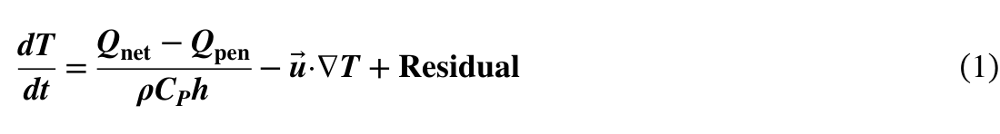
式中，左端为温度变化趋势项；右端第一项为海表热通量强迫项，第二项为水平平流项，第三项为残差项。
In this equation, the left‐hand side represents the temperature trend term, the first term on the right‐hand side is the sea surface heat flux forcing term, the second term represents the horizontal advection term and the third is the residual term.
由于缺乏垂直速度资料，而且该区域夹卷作用的贡献相对较小，夹卷作用与水平和垂直混合、扩散一并归入残差项（Q. Wang et al., 2022）。
Due to the unavailability of vertical velocity data and the relatively minor contribution of entrainment in this region, entrainment, together with horizontal and vertical mixing and diffusion, is represented as part of the residual term (Q. Wang et al., 2022).
这里，T为混合层平均温度，h为混合层深度，u⃗ = (u, v) 为纬向和经向速度。
Here, T is the mean temperature of the mixed layer, h is the depth of the mixed layer and ⃗u = (u, v) are the latitudinal and meridional velocities.
Qnet为海表净热通量，包括SWR、LWR、SHF和LHF。
Qnet is the net heat flux at the sea surface, including SWR, LWR, SHF and LHF.
Qpen表示穿透混合层底部的短波辐射，它是h和SWR的函数（Shi et al., 2022）。
Qpen represents the penetrating SWR through the base of the mixed layer which is a function of h and SWR (Shi et al., 2022).
ρ = 1026 kg/m³和Cp = 3990 J/(kg·°C) 分别为海水密度和海水比热容。
ρ = 1026 kg/m3 and Cp = 3990 J/(kg·°C) are the density of seawater and the specific heat capacity of seawater, respectively.
为得到式（1）各项的异常，从每一项中减去相应的气候态值。
To obtain anomalies for each term in Equation 1, the corresponding climatological value is subtracted from each term.
3. 结果
3. Results
3.1. 不同MJO位相对海洋热浪的影响
3.1. Impact of Different MJO Phases on MHWs
3.1.1. MJO相关的海洋热浪发生变化
3.1.1. Changes in MHW Occurrence Associated With the MJO
南海北部是一个海洋热浪热点区，其事件强度较高，平均SSTA超过2°C（Wang et al., 2023）。
The northern SCS is a hotspot for MHWs, characterized by high intensity, with average SSTA exceeding 2°C (Wang et al., 2023).
如第1节所述，本研究聚焦南海北部大陆架，即图1黑框所示区域。
As described in Section 1, this study focuses on the continental shelf of the northern SCS, as indicated by the black box in Figure 1.
该区域的海洋热浪呈现明显的季节循环，春季（3、4和5月）的强度尤其高（Wang et al., 2023）。
MHWs in this region exhibit a clear seasonal cycle, with particularly strong intensity observed in spring (March, April and May) (Wang et al., 2023).
此处南海西边界流将外陆架边缘与外海分开；该区域受东亚季风影响，并表现出显著季节内变率（Wu et al., 2015）。
This region, where the SCS western boundary current separates the outer shelf edge from the open ocean, is influenced by the East Asian monsoon and exhibits pronounced intraseasonal variability (Wu et al., 2015).
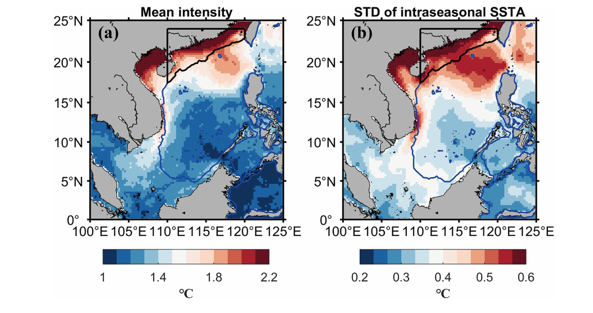
图1。
Figure 1.
空间分布：
Spatial distribution of
（a）海洋热浪平均强度（单位：°C）；
(a) mean intensity of MHWs (units: °C) and
（b）1982—2022年南海春季20–90天季节内海表温度异常的标准差（单位：°C）。
(b) standard deviation of intraseasonal 20–90‐day sea surface temperature anomalies (units: °C) in spring from 1982 to 2022 in the South China Sea.
黑框标示南海北部陆架区，定义为24°N以南、110°E至120°E之间且水深小于200 m的大陆架区域。
The black box indicates the northern shelf of the South China Sea, defined as the continental shelf region south of 24°N, between 110°E and 120°E, where the water depth is less than 200 m.
蓝线表示200 m等深线。
The blue line represents the 200 m isobath.
图1展示南海春季海洋热浪平均强度和季节内SSTA标准差的空间分布。
Figure 1 presents the spatial distributions of the mean intensity of MHWs and the standard deviation of the intraseasonal SSTA in spring in the SCS.
如图1a所示，南海春季海洋热浪的平均强度呈明显空间梯度，北部较高、南部较低。
As shown in Figure 1a, the mean intensity of spring MHWs in the SCS exhibits a distinct spatial gradient, with higher intensity in the north and lower value in the south.
北部沿海区域的最大强度可达2.2°C。
The maximum intensity reaches up to 2.2°C along the northern coastal region.
在NSCS，强度的空间分布呈大致平行于海岸线的带状结构。
In the NSCS, the spatial pattern of intensity shows a banded structure roughly parallel to the coastline.
此外，20–90天季节内SSTA的标准差表明南海北部变率较强，最高达到0.6°C，而南海南部的变率相对较弱。
In addition, the standard deviation of 20–90‐day intraseasonal SSTA shows high variability in the northern SCS, reaching up to 0.6°C, while the southern SCS shows relatively less variability.
季节内SSTA变率的整体空间分布与海洋热浪强度的分布非常相似，两者都在NSCS呈现较高数值。
The overall spatial distribution of intraseasonal SSTA variability closely resembles that of MHW intensity, with both exhibiting elevated values in the NSCS.
然而，两者之间的具体关系仍有待阐明。
However, the specific relationship between them remains to be clarified.
鉴于季节内SST变率主要由ISO驱动，下面将重点关注ISO的作用，考察NSCS春季海洋热浪的成因机制（Cao et al., 2017）。
In the following, we will examine the mechanisms responsible for the spring MHWs in the NSCS, with a particular focus on the role of ISOs, given that intraseasonal SST variability is primarily driven by ISOs (Cao et al., 2017).
值得注意的是，MJO是热带对流层的主导ISO模态（Madden & Julian, 1971）。
It is noteworthy that the MJO is the dominant ISO mode in the tropical troposphere (Madden & Julian, 1971).
MJO是一种行星尺度扰动，从印度洋经南海向东传播至西太平洋，可引起SST的季节内变化（G. Wang et al., 2013）。
The MJO is a planetary‐scale disturbance that propagates eastward from the Indian Ocean to the western Pacific Ocean through the SCS, which can induce intraseasonal variations in the SST (G. Wang et al., 2013).
依据RMM指数和MJO对流中心的位置，可将MJO划分为八个位相。
Depending on the RMM index and the location of the MJO convection center, the MJO can be divided into eight phases.
不同位相对南海的海气条件有不同影响（补充材料S1中的图S1）。
Different phases have different impacts on the ocean–atmosphere conditions in the SCS (Figure S1 in Supporting Information S1).
为研究活跃MJO各位相下海洋热浪发生情况的空间分布，图2给出不同MJO位相期间各网格点海洋热浪概率的百分比变化。
To investigate the spatial distribution of MHW occurrences under active MJO phases, Figure 2 presents the percentage change in MHW probability at each grid point during different MJO phases.
变化的合成图依据海洋热浪日数而非海洋热浪事件数构建。
The composite map of changes is constructed based on the number of MHW days, rather than the number of MHW events.
与非MJO状态相比，第2和第3位相对应的海洋热浪发生概率显著升高，尤以NSCS为甚；部分地区的概率增幅超过100%。
Compared to the non‐MJO state, phases 2 and 3 are associated with a significant increase in the probability of MHW occurrence, particularly over the NSCS, where the probability increases by more than 100% in some areas.
在第4和第5位相，这一概率逐渐减弱；随后在第6、第7、第8及第1位相，海洋热浪发生概率大幅降低（图2a–2h）。
During phases 4 and 5, the probability gradually weakens, and in the subsequent phases 6, 7, 8, and 1, the probability of MHW occurrence decreases substantially (Figures 2a–2h).
对NSCS进一步取区域平均（图2i）表明，第2和第3位相期间海洋热浪平均发生概率分别增加60.3%和34%。
Further averaging over the NSCS (Figure 2i) reveals that during phases 2 and 3, the mean probability of MHW occurrence increases by 60.3% and 34%, respectively.
第4和第5位相的增幅较小，分别为22%和13.2%；在其余四个位相，整个区域的海洋热浪概率则下降。
In phases 4 and 5, the increase is more modest, at 22% and 13.2%, while in the remaining four phases, the MHW probability decreases across the region.
这些结果提示，MJO可能在第2和第3位相促进NSCS海洋热浪的发生。
These results suggest that the MJO may facilitate the probability of MHW occurrences during phases 2 and 3 in the NSCS.
下一节将进一步考察这些位相对应的调制过程。
The modulation processes associated with these phases are further examined in the following section.
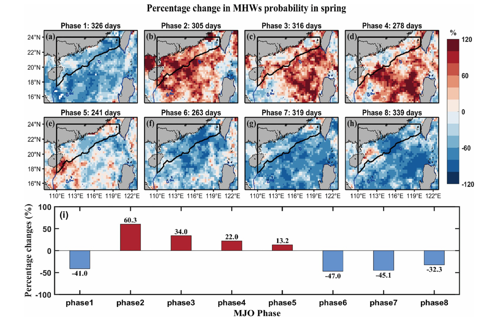
图2。
Figure 2.
相对于非MJO状态，马登—朱利安振荡（MJO）八个位相各自的海洋热浪（MHW）发生概率百分比变化（%）。
Percentage changes (%) in the probability of marine heatwave (MHW) for each of the eight phases of Madden– Julian Oscillation (MJO) with respect to the non‐MJO state.
（a–h）
(a–h)
变化的空间分布；（i）南海北部陆架区的区域平均。
Spatial distribution of the changes; (i) Area‐averaged in the northern shelf of the South China Sea.
某一MJO位相下的海洋热浪发生概率（Px）按该位相中发生海洋热浪的日数除以总日数计算。
The probability of MHW occurrence in a given MJO phase (Px) is calculated as the number of days when the MHW occurs divided by total number of days.
百分比变化按［(Px − Pnon‐MJO)/Pnon‐MJO × 100］计算，其中Pnon‐MJO表示非MJO时段的海洋热浪发生概率。
Percentage change is computed as [(Px −Pnon‐MJO)/ Pnon‐MJO × 100], where Pnon‐MJO represents the probability of MHW occurrence in the non‐MJO period.
3.1.2. MJO调制海洋热浪的关键过程
3.1.2. Key Processes in the MJO Modulation of MHWs
为研究MJO促进海洋热浪发生的具体过程，我们首先分析不同MJO位相对应的合成SSTA。
To investigate the specific processes through which the MJO facilitates the occurrence of MHWs, we first analyze the composite SSTA associated with different MJO phases.
图3给出1982—2022年春季所有RMM振幅大于1的日子所对应的合成SSTA。
Figure 3 illustrates the composite SSTA for all spring days when the RMM amplitudes exceed 1 between 1982 and 2022.
这些异常与MJO的不同位相相联系。
These anomalies are associated with the different phases of the MJO.
显然，NSCS的SSTA空间变率受到MJO不同位相的显著影响（图3a–3h）。
It is evident that the spatial variability of SSTA in the NSCS is significantly influenced by the various phases of the MJO (Figures 3a–3h).
在第2和第3位相，NSCS出现正SSTA，最大值约为0.3°C。
During phases 2 and 3, positive SSTA emerge in the NSCS, with the maximum reaching approximately 0.3°C.
这些正异常在第4和第5位相减弱，显著性也下降。
These positive anomalies weaken during phases 4 and 5 and become less significant.
在随后的位相（第6、第7、第8和第1位相），该区域形成显著负SSTA。
In the subsequent phases (6, 7, 8, and 1), significant negative SSTA develop in the region.
此外，NSCS的SSTA概率分布（图3i）表明，与其他位相相比，第2和第3位相的正SSTA上界更高，暖极端尾部呈现明显正偏态。
Furthermore, the probability distribution of SSTA in the NSCS (Figure 3i) reveals that phases 2 and 3 are characterized by a higher upper bound of positive SSTA compared to other phases, with considerable positive skewnesses in the warm extreme tail.
这一特征有利于海洋热浪发生。
This feature favors the occurrence of MHWs.
相比之下，在第4和第5位相，正异常的上界有所降低，因而对海洋热浪发生的促进作用减弱。
In contrast, during phases 4 and 5, the upper bound of positive anomalies decreases to some extent, leading to a reduced enhancement of MHW occurrence.
其余四个位相则以负SSTA占主导，从而抑制海洋热浪发展。
For the remaining four phases, negative SSTA are dominant, which suppress the development of MHWs.
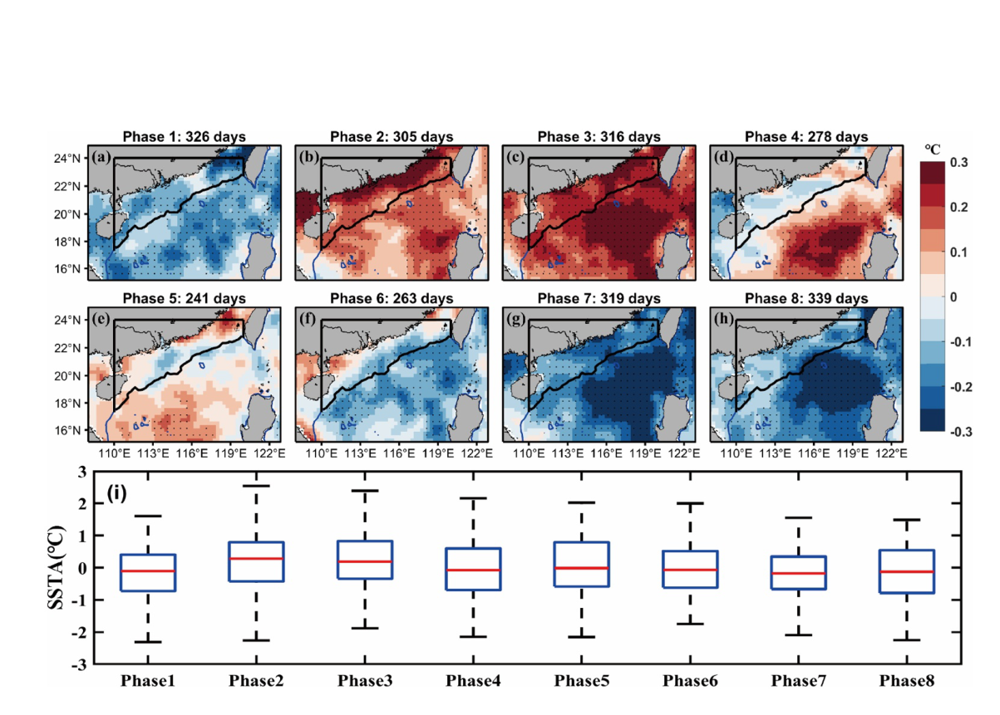
图3。
Figure 3.
相对于非MJO状态，马登—朱利安振荡各位相的海表温度异常（SSTA）合成图（阴影，单位：°C）。
Composites of sea surface temperature anomalies (SSTA) (shading, units: °C) in each phase of the Madden–Julian Oscillation compared with the non‐MJO state.
（a–h）
(a–h)
SSTA的空间分布；（i）南海北部陆架区SSTA的概率分布函数。
Spatial distribution of SSTA; (i) Probability distribution functions of SSTA in the northern shelf of the South China Sea.
点表示超过95%置信水平的数值。
The dots represent values that exceed the 95% confidence level.
箱线图给出下界、第一四分位数、中位数、第三四分位数和上界。
The box plots show the lower bound, first quartile, median, third quartile, and upper bound.
不同MJO位相下SSTA的合成分析表明，活跃MJO第2和第3位相期间的正SSTA对海洋热浪的发生有显著贡献。
Composite analysis of SSTA associated with different MJO phases reveals that the positive SSTA during active MJO phases 2 and 3 contribute significantly to the occurrence of MHWs.
为研究其潜在驱动过程，我们分析MJO第2和第3位相期间NSCS的局地混合层热收支。
To investigate the underlying driving processes, we analyze the local mixed‐layer heat budget in the NSCS during MJO phases 2 and 3.
如图4a和4b所示，混合层增暖主要归因于海表净热通量增加，其中SWR和LHF的正异常起主导作用。
As shown in Figures 4a and 4b, the warming of the mixed layer is primarily attributed to the increase in net surface heat flux, with positive anomalies in SWR and LHF playing dominant roles.
MJO第2和第3位相期间SWR与LHF的贡献明显高于其他位相（补充材料S1中的图S2）。
The contributions of SWR and LHF during MJO phases 2 and 3 are notably higher than those during other phases (Figure S2 in Supporting Information S1).
相关大气变量的空间分布表明，在第 2、3 位相，云量和海面风速减小使短波辐射增强、蒸发冷却减弱，从而促进海表温度升高，并有利于海洋热浪发生。
The spatial patterns of relevant atmospheric variables indicate that during phases 2 and 3, a reduction in TCC and surface wind speed enhances SWR and reduces evaporative cooling, thereby promoting SST warming and facilitating the occurrence of MHWs.
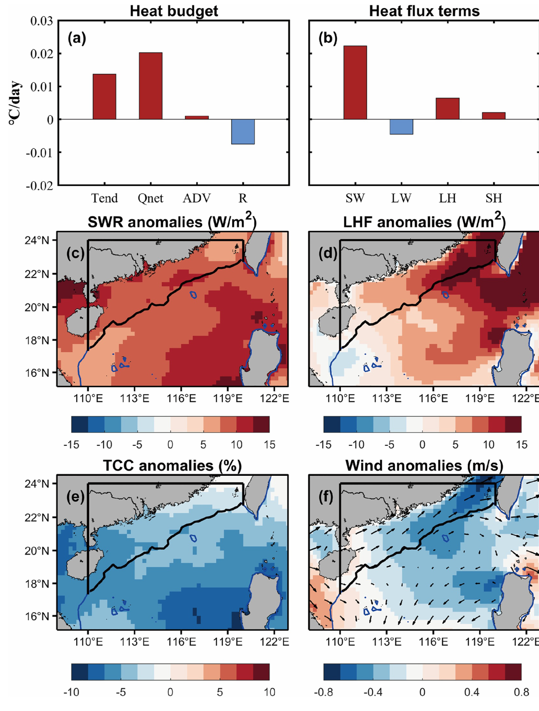
图 4。
Figure 4.
Madden–Julian 振荡第 2、3 位相期间的合成结果。
Composite results during Madden–Julian Oscillation phases 2 and 3.
（a）混合层热收支各项（单位：°C/天），从左到右依次为海表温度变化率、净表面热通量、水平平流和残差。
(a) Mixed‐layer heat budget terms (units: °C/day), including (from left to right): sea surface temperature tendency, net surface heat flux, horizontal advection, and residual.
（b）净表面热通量的组成项（单位：°C/天），从左到右依次为短波辐射（SWR）、长波辐射、潜热通量（LHF）和感热通量，分别表示它们对混合层温度变化的贡献。
(b) Components of the net surface heat flux (units: °C/day), from left to right: shortwave radiation (SWR), longwave radiation, latent heat flux (LHF), and sensible heat flux, representing their respective contributions to mixed layer temperature changes.
（c–f）
(c–f)
短波辐射异常（单位：W/m²）、潜热通量异常（单位：W/m²）、总云量异常（单位：%）和 10 m 风速异常（单位：m/s）的空间分布。
Spatial distribution of SWR anomalies (units: W/m2), LHF anomalies (units: W/m2), total cloud cover anomalies (units: %), 10 m wind speed anomalies (units: m/s).
请注意，为探究海洋热浪的驱动机制，此处的异常值根据未经过滤的数据计算。
Note that, in order to investigate the driving mechanisms of MHWs, the anomalies here are calculated based on unfiltered data.
在活跃期，MJO 的信号更强、更连贯，振荡结构也更大、更连续，并通过深对流和大尺度平流影响天气与气候（Jiang et al., 2020; Jin & Hoskins, 1995; Zheng & Chang, 2019）。
During active periods, the MJO exhibits stronger and more coherent signals, as well as larger and more continuous oscillation structures, influencing weather and climate through deep convection and large‐scale advection (Jiang et al., 2020; Jin & Hoskins, 1995; Zheng & Chang, 2019).
与 MJO 相关的对流加热可以通过罗斯贝波影响热带外大气环流，并调节大气过程。
The convective heating associated with the MJO can influence the extratropical atmospheric circulation via Rossby waves and modulate atmospheric processes.
先前研究表明，当 MJO 位于印度洋时，其对流加热可触发向东北传播的罗斯贝波列，导致北太平洋上空异常反气旋环流发展（Henderson et al., 2017; L. Zhang et al., 2009）。
Previous studies have shown that when the MJO is located in the Indian Ocean, its convective heating can trigger northeastward propagating Rossby wave trains, leading to the development of anomalous anticyclonic circulation over the North Pacific (Henderson et al., 2017; L. Zhang et al., 2009).
这会加强大气下沉运动，并促进西太平洋副热带高压向西伸展和增强。
This enhances atmospheric subsidence and promotes the westward extension and strengthening of the WPSH.
我们分析了 MJO 第 2、3 位相期间 850 hPa 位势高度、风和垂直速度异常。
We analyze the 850 hPa geopotential height, wind and vertical velocity anomalies during MJO phases 2 and 3.
结果显示，南海北部陆架受异常反气旋影响，并在 850 hPa 以下出现下沉运动（图 5a、5b）。
Results show that the NSCS is influenced by an anomalous anticyclone and experiences descending movements below 850 hPa (Figures 5a and 5b).
受抑制的对流使总云量减少，从而增强短波辐射。
The suppressed convection reduces TCC, thereby enhancing SWR.
此外，异常反气旋环流在 10 m 高度产生西南风异常，使海面风速减弱，并减少向大气输送的潜热通量。
In addition, the presence of anticyclonic circulation anomalies induces southwesterly wind anomalies at 10 m, which weaken surface wind speeds and reduce LHF into the atmosphere.
这解释了受 MJO 调节的大气环流如何促使局地海洋升温，进而有利于海洋热浪发生。
This explains how atmospheric circulation modulated by the MJO contributes to local ocean warming, thereby favoring the occurrence of MHWs.
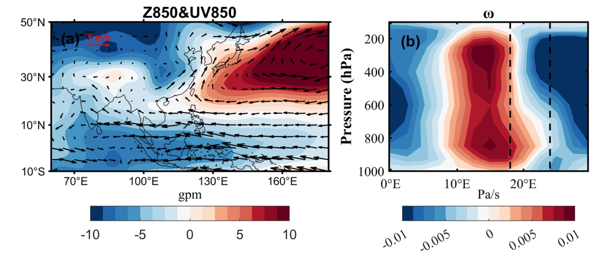
图 5。
Figure 5.
以下变量的合成：
Composite of
（a）850 hPa 位势高度异常（填色，单位：gpm）和 850 hPa 风异常（矢量，单位：m/s）；
(a) 850 hPa geopotential height anomalies (shading, units: gpm) and 850 hPa wind anomalies (vectors, units: m/s);
（b）Madden–Julian 振荡第 2、3 位相期间的垂直速度异常（单位：Pa/s）。
(b) vertical velocity anomalies (units: Pa/s) during Madden–Julian Oscillation phases 2 and 3.
图（b）中 ω 的经度范围为
The longitude range of ω in
110°–120°N；黑色虚线表示南海北部陆架的纬度范围（18°–24°N）。
(b) is 110°–120°N, and the black dashed line indicates the latitude range of the northern shelf of the South China Sea (18°–24°N).
此处的异常值根据未经过滤的数据计算。
The anomalies here are calculated based on unfiltered data.
3.2. 与 MJO 相关的季节内海表温度异常对南海北部陆架海洋热浪的影响
3.2. The Influence of MJO‐Associated Intraseasonal SSTA on MHWs in the NSCS
上述分析表明，在 MJO 第 2、3 位相，其所引起的大气环流型使南海北部陆架海洋热浪的平均发生概率显著增加。
The above analysis indicates that during MJO phases 2 and 3, the average occurrence probability of MHWs in the NSCS increases significantly due to the influence of MJO‐induced atmospheric circulation patterns.
本节进一步探讨与 MJO 相关的季节内海表温度变率对海洋热浪事件的影响。
In this section, we further explore the impact of intraseasonal SST variability associated with the MJO on MHW events.
考虑到海洋热浪具有区域一致性，我们根据区域平均海表温度，在南海北部陆架识别出 28 次大范围海洋热浪事件。
Considering the regional coherence of MHWs, we identify 28 large‐scale MHW events in the NSCS based on area‐averaged SST.
随后，我们分析这些海洋热浪事件与季节内海表温度异常之间的关系。
We then analyze the relationship between these MHW events and intraseasonal SSTA.
图 6 展示了南海北部陆架区域平均、经 20–90 天滤波的海表温度异常时间序列。
Figure 6 displays the time series of the area‐averaged 20–90‐day filtered SSTA in the NSCS.
大多数春季均可观测到强烈的季节内海表温度异常振荡，其振幅范围为 −1°C 至 +1.4°C。
Strong oscillations of intraseasonal SSTA are observed in most springs, with amplitudes spanning a range of −1°C to +1.4°C.
如图 6 所示，1982—2022 年春季，南海北部陆架共记录到 69 次季节内暖事件。
As shown in Figure 6, a total of 69 intraseasonal warm events are recorded in the NSCS during the springs of 1982–2022.
这些事件被定义为季节内正海表温度异常最大值超过一个标准差（0.44°C）的振荡周期。
These events are defined as a cycle in which the maximum intraseasonal positive SSTA exceeding one standard deviation (0.44°C).
南海北部陆架春季共发生 28 次海洋热浪，其中 23 次（占总数的 82%）与季节内暖事件在时间上重合，表明季节内变率与海洋热浪的发展可能存在联系。
A total of 28 MHW events occur in spring in the NSCS, of which 23 (82% of total) MHW events coincide with intraseasonal warm events (overlap in time), which points to a possible link between intraseasonal variability and MHW development.
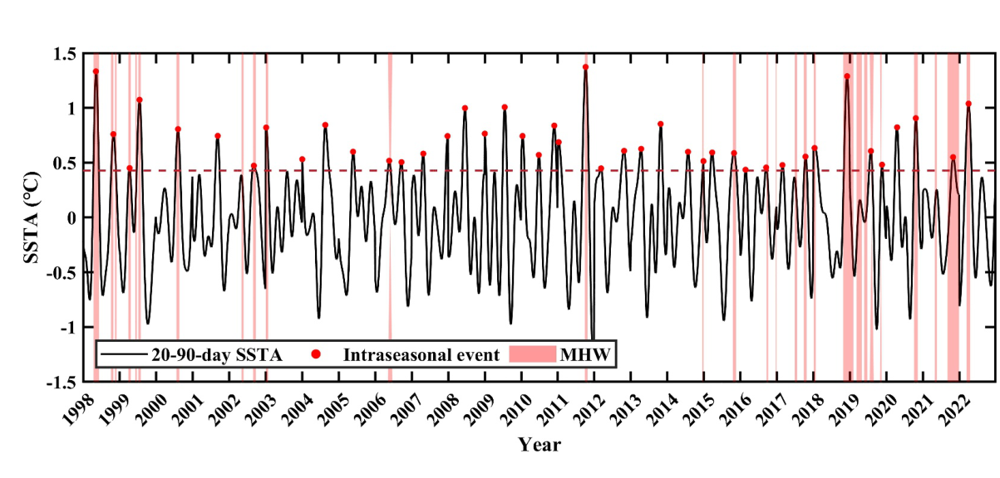
图 6。
Figure 6.
1998—2022 年春季南海北部陆架 20–90 天季节内海表温度异常（SSTA；黑色实线，单位：°C）与海洋热浪（MHW）事件（红色阴影）之间的关系。
Relationships between 20–90‐day intraseasonal sea surface temperature anomalies (SSTA) (black solid line, units: °C) and marine heatwave (MHW) events (red shading) in the northern shelf of the South China Sea in spring from 1998 to 2022.
鉴于海洋热浪事件发生于 1998 年之后，该图仅展示 1998—2022 年的时段。
Given that MHW events occur after 1998, the figure is limited to the period from 1998 to 2022.
两条平行的红色虚线表示季节内海表温度异常时间序列的一个标准差（0.44°C）。
The parallel red‐dashed lines represent one standard deviation (0.44°C) of the intraseasonal SSTA time series.
红点表示较强的季节内暖事件，每个点标示该事件中正海表温度异常达到最大值的日期。
The red dots represent strong intraseasonal warm events, and each dot indicates the date when the maximum positive SSTA occurs in the event.
此外，对海洋热浪事件期间 RMM 振幅的分析表明，南海北部陆架 28 次海洋热浪中有 12 次与活跃的 MJO 第 2、3 位相相关（补充材料 S1 中的图 S3）。
Furthermore, analysis of RMM amplitude during MHW events reveals that 12 out of the 28 MHW events in the NSCS are associated with active MJO phases 2 and 3 (Figure S3 in Supporting Information S1).
表 1 概述了伴随与未伴随活跃 MJO 第 2、3 位相的海洋热浪事件的特征。
Table 1 summarizes the characteristics of MHW events with and without active MJO phases 2 and 3.
显然，MJO 第 2、3 位相显著提高了海洋热浪的最大强度、持续时间和累积强度。
It is evident that MJO phases 2 and 3 significantly enhance the maximum intensity, duration, and cumulative intensity of MHWs.
值得注意的是，这 12 次事件也都与季节内暖事件重合，说明活跃的 MJO 位相能够调节南海北部陆架的季节内海表温度变率，进而影响海洋热浪事件。
Notably, these 12 events also coincided with intraseasonal warm events, suggesting that active MJO phases can regulate intraseasonal SST variability in the NSCS and thereby modulate the MHW events.
表 1。伴随活跃 MJO 第 2、3 位相（有 MJO）与未伴随活跃 MJO 第 2、3 位相（无 MJO）的海洋热浪事件特征。
Table 1. Characteristics of MHW Events With Active MJO Phases 2 and 3 (With MJO) and MHW Events Without Active MJO Phases 2 and 3 (Without MJO).
频次平均强度最大强度*持续时间*累积强度*
FrequencyMeanIntMaxInt*Duration*CumInt*
有MJO121.531.8926.1820.86
With MJO121.531.8926.1820.86
无MJO161.431.6418.3311.36
Without MJO161.431.6418.3311.36
注：“MeanInt”表示海洋热浪事件的平均强度（单位：°C），“MaxInt”表示最大强度（单位：°C），“CumInt”表示累积强度（单位：°C）。星号表示Student t检验的置信水平超过90%。
Note. “MeanInt” represents mean intensity (units: °C), “MaxInt” represents maximum intensity (units: °C), and “CumInt” represents cumulative intensity (units: °C) of MHW events. Results of the Student's t-test with confidence levels exceeding 90% are denoted by asterisks.
为理解季节内海表温度异常在南海北部陆架春季海洋热浪事件形成和演变中的作用。
To understand the role of intraseasonal SSTA leading to the genesis and evolution of MHW events in the NSCS in spring.
图 7a 展示了与活跃 MJO 第 2、3 位相相关的海洋热浪开始前后，季节内海表温度异常以及包括短波辐射、长波辐射、感热通量和潜热通量在内的净热通量的演变。
Figure 7a illustrates the evolution of intraseasonal SSTA and net heat flux including SWR, LWR, SHF and LHF before and after the MHW onset associated with active MJO phases 2 and 3.
我们发现，季节内海表温度异常在海洋热浪开始前第 5 天表现为正异常，并在开始后第 5 天达到最大值，振幅为 0.55°C。
We find that intraseasonal SSTA exhibit a positive anomaly on the 5 days before the onset of MHWs and reach a maximum on the 5 days after the onset, with an amplitude of 0.55°C.
观测到的短波辐射和潜热通量变化早于海表温度异常的变化，而长波辐射和感热通量的变化相对较小。
The observed changes in SWR and LHF lead than those in SSTA, while changes in LWR and SHF are relatively minor.
由图 7b 可见，增强的向外长波辐射和短波辐射比海表温度异常超前约 6 天，相关系数 R 分别为 0.86 和 0.65。
From Figure 7b, enhanced OLR and SWR lead SSTA by ∼6 days with R values 0.86 and 0.65, respectively.
风速减小的异常比海洋热浪开始超前约 6 天（R = −0.85）；海面蒸发因而减弱，使潜热通量减少。
Reduced wind speed anomalies lead the MHWs onset by ∼6 days (R = −0.85), resulting in decreased LHF due to reduced evaporation from the sea surface.
图 7c 展示了海洋热浪开始前 15 天至开始后 10 天期间季节内向外长波辐射的空间分布。
Figure 7c presents the spatial distribution intraseasonal OLR from 15 days before to 10 days after MHW onset.
显然，在海洋热浪开始前约 5 天，印度洋上空的对流活动增强，而南海北部陆架上空的对流受到抑制。
It is evident that around 5 days before the onset of MHW, convective activity intensifies over the Indian Ocean while convection is suppressed over the NSCS.
南海北部陆架上空的这种对流抑制一直持续到海洋热浪开始后 5 天，同时印度洋上空的对流继续增强。
This suppressed convection over the NSCS persists until 5 days after the MHW onset, accompanied by continued convective enhancement over the Indian Ocean.
这些分布型与 MJO 第 2、3 位相典型的大气环流特征一致，有利于南海北部陆架表层升温。
These patterns are consistent with the typical atmospheric circulation features of MJO phases 2 and 3, which favor surface warming in the NSCS.
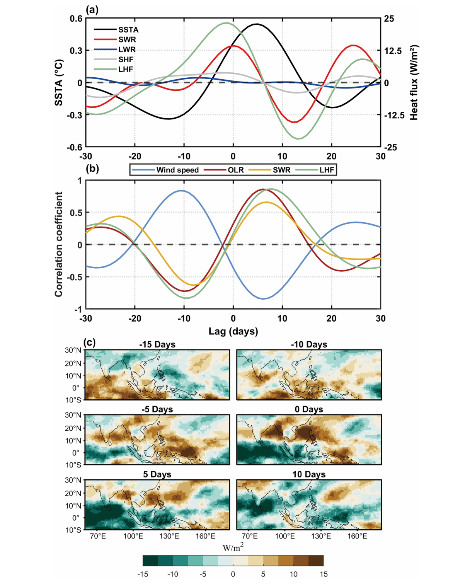
图 7。
Figure 7.
（a）1982—2022 年，与活跃的 Madden–Julian 振荡（MJO）第 2、3 位相相关的海洋热浪（MHW）事件发生前及发生期间，南海北部陆架（NSCS）的季节内海表温度异常（SSTA；单位：°C）、短波辐射（SWR；单位：W/m²）、长波辐射（单位：W/m²）、感热通量（单位：W/m²）和潜热通量（LHF；单位：W/m²）。
(a) Intraseasonal sea surface temperature anomalies (SSTA) (units: °C), shortwave radiation (SWR) (units: W/m2), longwave radiation (units: W/m2), sensible heat flux (units: W/m2) and latent heat flux (LHF) (units: W/m2) in the northern shelf of the South China Sea (NSCS) before and during marine heatwave (MHW) events associated with active Madden– Julian Oscillation (MJO) phases 2 and 3 for the period 1982–2022.
（b）利用海洋热浪事件开始前 30 天至开始后 30 天的数据，估计南海北部陆架的季节内海表温度异常与风速（单位：m/s）、向外长波辐射（OLR）、短波辐射及潜热通量之间的超前—滞后相关。
(b) Lead‐lag correlation between intraseasonal SSTA and wind speed (units: m/s), Outgoing Longwave Radiation (OLR), SWR and LHF in the NSCS, estimated from the 30 days before and 30 days after the onset of MHW events.
（c）与活跃 MJO 第 2、3 位相相关的海洋热浪事件开始前 15 天至开始后 10 天，向外长波辐射（单位：W/m²）的合成空间分布。
(c) Composite spatial distribution of OLR (units: W/m2) from 15 days before to 10 days after the onset of MHW events associated with active MJO phases 2 and 3.
这里对海表温度异常和大气变量进行了滤波，以提取 20–90 天的季节内信号。
Here, SSTA and atmospheric variables have been filtered to extract the 20–90‐days intraseasonal signals.
图 8 进一步展示了海洋热浪事件发生前后混合层热收支各项随时间的演变。
Figure 8 further shows the time evolution of the mixed‐layer heat budget terms before and after MHW events.
与平流项相比，热通量项对温度变化的影响更大。
In comparison to the advection term, the heat flux term is found to exert a greater influence on the temperature change.
在热通量项中，短波辐射贡献最大，潜热通量贡献次之。
In the heat flux term, SWR is the main contribution and LHF is the second contribution.
值得注意的是，由于研究区域内混合层深度存在空间差异，尽管潜热通量的平均异常更大，短波辐射对混合层热收支的贡献仍大于潜热通量。
Notably, due to the spatial variability in mixed layer depth across the study region, the contribution of SWR to the mixed‐layer heat budget is greater than that of LHF, despite the larger average anomaly in LHF.
短波辐射和潜热通量在各热通量项中发挥突出作用。
The SWR and the LHF has a prominent role among the heat flux terms.
因此可以得出结论：在活跃 MJO 第 2、3 位相的调节下，风速减弱与天空更晴朗共同促使南海北部陆架形成正的季节内海表温度异常，并最终导致海洋热浪发生。
Therefore, we can conclude that under the modulation of active MJO phases 2 and 3, the combination of reduced wind speed and clearer sky conditions jointly contributes to the development of positive intraseasonal SSTA over the NSCS, ultimately leading to the occurrence of MHWs.
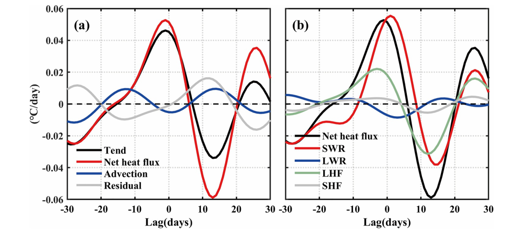
图 8。
Figure 8.
（a）1982—2022 年，与活跃 Madden–Julian 振荡第 2、3 位相相关的海洋热浪事件期间，20–90 天热收支各项（单位：°C/天）的时间演变。
(a) Time evolution of the 20–90‐day heat budget terms (units: °C/day) during the marine heatwave events associated with active Madden–Julian Oscillation phases 2 and 3 for the period 1982–2022.
黑线表示混合层温度变化率，红线表示净表面热通量，蓝线表示水平平流，灰线表示残差项。
The black line represents the tendency of the mixed layer temperature, the red line represents the net surface heat flux, the blue line represents horizontal advection, and the gray line denotes the residual term.
（b）混合层热收支中 20–90 天净表面热通量项（单位：°C/天）的时间演变。
(b) Time evolution of the 20–90‐day net surface heat flux term (units: °C/day) of the mixed‐layer heat budget.
黑线表示净热通量，红线表示短波辐射，蓝线表示长波辐射，灰线表示感热通量，绿线表示潜热通量。
The black line represents net heat flux, the red line represents shortwave radiation, the blue line represents longwave radiation, the gray line represents sensible heat flux and the green line represents latent heat flux.
3.3. 个例研究：2021 年 5 月发生的极端海洋热浪事件
3.3. Case Study: Extreme MHW Event Occurred in May 2021
我们已经表明，MJO 第 2、3 位相能够通过影响季节内海表温度变率，调节南海北部陆架海洋热浪的发生。
We have demonstrated that MJO phases 2 and 3 can modulate the occurrence of MHWs in the NSCS by influencing intraseasonal SST variability.
为进一步考察其中的物理机制，本节以南海北部陆架的一次极端海洋热浪事件为个例进行研究。
To further examine the physical mechanisms involved, this section presents a case study of an extreme MHW event in the NSCS.
2021 年，南海北部陆架经历了有记录以来最热的 5 月（图 9a）。
In 2021, the NSCS experienced the hottest May on record (Figure 9a).
一次破纪录的海洋热浪事件发生了（下文称为 MHW-21）；在所有春季海洋热浪事件中，它的持续时间最长（43 天），最大强度列第三（2.27°C）。
A record‐breaking MHW event occurred (hereafter referred to as MHW‐21), characterized by the longest duration (43 days) and the third largest maximum intensity (2.27°C) among all MHW events in spring.
其累积强度达到 71.8°C，位列有记录以来的最高值之列，主要归因于持续时间长、平均强度高（图 9b）。
Its cumulative intensity reached 71.8°C, ranking among the highest recorded, primarily due to its prolonged duration and elevated mean intensity (Figure 9b).
这次极端海洋热浪伴随一次高度活跃的 MJO 事件，尤其是在第 2、3 位相。
This extreme MHW event was accompanied by a highly active MJO event, especially in phases 2 and 3.
如图 9c 所示，这些位相的活跃天数明显增多，表明 MJO 在调节 MHW-21 的开始和强度方面起关键作用。
As shown in Figure 9c, the markedly increased number of active days in these phases suggests a critical role of the MJO in modulating the onset and intensity of MHW‐21.
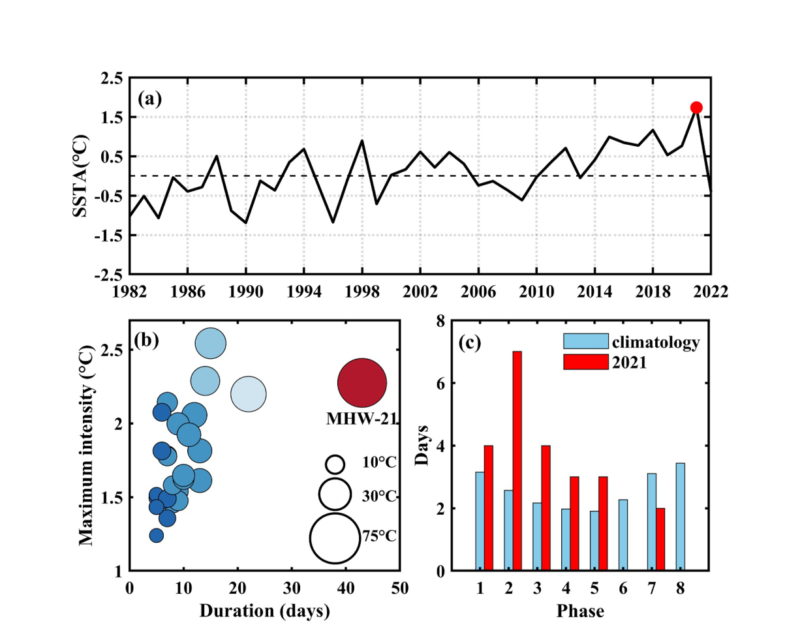
图 9。
Figure 9.
（a）1982—2022 年南海北部陆架 5 月海表温度异常时间序列（单位：°C）。
(a) Time series of May sea surface temperature anomalies (units: °C) in the northern shelf of the South China Sea from 1982 to 2022.
红点标示 2021 年 5 月。
The red dot marks May 2021.
（b）海洋热浪的最大强度和持续时间。
(b) Maximum intensity and duration of MHWs.
圆圈的大小和颜色表示海洋热浪的累积强度。
The circle size and color indicate the cumulative intensities of MHWs.
（c）5 月各 Madden–Julian 振荡位相的活跃天数（定义为实时多变量 MJO 指数振幅超过 1 的天数）。
(c) Number of active days for each Madden–Julian Oscillation phase in May (defined as days when the Real‐Time Multivariate MJO Index amplitude exceeds 1).
蓝色柱表示气候态平均值，红色柱表示 2021 年的数值。
Blue bars indicate the climatological mean, while red bars represent values for 2021.
图 10a 展示了南海北部陆架海表温度、其气候态及第 90 百分位阈值的演变，并标示了 MHW-21 的开始、峰值和结束时间。
Figure 10a illustrates the evolution of SST in the NSCS, with its climatology and 90th percentile threshold, highlighting the start time, peak, and end time of the MHW‐21.
MHW-21 于 5 月 2 日开始，5 月 15 日达到峰值，当时海表温度比当日气候态高出逾 2.27°C；事件持续约 43 天，于 6 月 13 日结束。
The MHW‐21 began on May 2, peaked on May 15 at maximum magnitude of over 2.27°C above the daily climatology, and lasted approximately 43 days, ending on June 13.
对海表温度异常进一步滤波后发现，低频海表温度异常的振幅在 1°C 至 1.5°C 之间（图 10b），在维持此次事件方面起主导作用。
Further filtering the SSTA, we find that low‐frequency SSTA amplitude was between 1°C and 1.5°C (Figure 10b), played a dominant role in sustaining this event.
与此同时，20–90 天季节内振荡分量的最大振幅约为 0.55°C（图 10b 中蓝线）。
At the same time, the 20–90‐day ISO components reached a maximum amplitude of about 0.55°C (blue line in Figure 10b).
尽管 20–90 天季节内振荡分量的振幅相对小于低频海表温度异常，其在这次极端海洋热浪事件的发展中发挥了同样关键的作用。
Although the amplitude of the 20–90‐day ISO components was relatively smaller than that of low‐frequency SSTA, it played an equally critical role in the development of this extreme MHW event.
事实上，按照海表温度异常超过第 90 百分位阈值来定义海洋热浪时，叠加在低频背景上的 20–90 天季节内海表温度变率显著增加了海表温度异常超出阈值的幅度。
In fact, according to the definition of MHW—based on SSTA exceeding the 90th percentile threshold, the 20–90‐day intraseasonal SST variability, superimposed on the low‐frequency background, significantly increased the magnitude by which SSTA exceeded the threshold.
去除 20–90 天季节内振荡后（图 10c 中的绿色阴影），MHW-21 的最大强度（从 2.27°C 降至 1.83°C）和平均强度（从 1.67°C 降至 1.44°C）均明显减小。
The removal of the 20–90‐day ISO (green shading in Figure 10c) resulted in a notable reduction in both the maximum (from 2.27°C to 1.83°C) and mean intensity (from 1.67°C to 1.44°C) of MHW‐21.
这些结果表明，MHW-21 由低频背景增暖和季节内海表温度变率共同驱动。
These results demonstrate that MHW‐21 was jointly driven by low‐frequency background warming and intraseasonal SST variability.
持续的低频增暖提供了充足的热背景，而叠加其上的季节内振荡分量带来额外变率，使该事件发展为更强、更持久的海洋热浪。
The persistent low‐frequency warming provided a sufficient thermal background, while the ISO components superimposed additional variability, pushing the event into a more intense and prolonged MHW.
值得注意的是，天气尺度的海表温度变率也可能影响海洋热浪的演变。
It is worth noting that weather‐scale SST variability may also influence the evolution of MHWs.
但由于其在本个例中的贡献相对较小，这里不予讨论。
However, due to its relatively smaller contribution in this case, it is not discussed here.
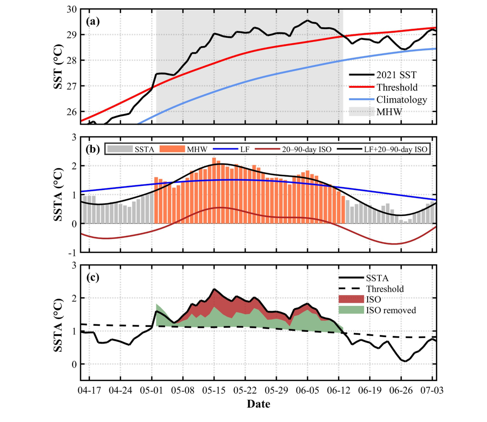
图 10。
Figure 10.
（a）2021 年南海北部陆架区域平均的逐日海表温度（黑线，单位：°C）。
(a) Daily of sea surface temperature (black line, units: °C) averaged over the northern shelf of the South China Sea (NSCS) in 2021.
红线和蓝线分别表示第 90 百分位阈值和气候态。
The red and blue lines represent the 90th percentile threshold and climatology, respectively.
阴影表示 MHW-21 发生的时段。
Shading represents the period of MHW‐21.
（b）南海北部陆架区域平均的逐日海表温度异常（柱形，单位：°C）。
(b) Daily sea surface temperature anomalies (SSTA) (bars, units: °C) averaged over the NSCS.
橙色柱表示发生海洋热浪的日期。
The orange bars represent days with marine heatwave.
蓝线、红线和黑线分别表示低频分量、海表温度异常的 20–90 天季节内振荡分量，以及两者之和。
The blue, red and black lines denote the low‐frequency components, 20–90‐day intraseasonal oscillation (ISO) components of SSTA and their sum, respectively.
（c）南海北部陆架区域平均的逐日海表温度异常（黑线，单位：°C）。
(c) Daily SSTA (black line, units: °C) averaged over the NSCS.
黑色虚线表示海表温度异常的 20–90 天季节内振荡分量。
The black dashed line represents 20–90‐day ISO components of the SSTA.
红色和绿色阴影分别表示海表温度异常的 20–90 天季节内振荡分量，以及去除海表温度异常的 20–90 天季节内振荡分量后仍高于阈值的数值。
The red and green shadings denote the 20–90‐day ISO components of the SSTA and the values after removing the 20–90‐day ISO components of the SSTA above threshold, respectively.
为阐明南海北部陆架 MHW-21 期间温度变化的驱动机制，我们基于混合层热收支方程开展了诊断分析。
To elucidate the driving mechanism for the temperature changes of MHW‐21 in the NSCS, we conducted a diagnostic analysis based on the mixed‐layer heat budget equation.
图 11 展示了混合层热收支各贡献项的演变。
Figure 11 illustrates the evolution of each term contributing to the mixed‐layer heat budget.
其中，异常净热通量对 MHW-21 期间的温度起主导作用，平流项和残差项的贡献均相对较小。
Among these, the anomalous net heat flux exerted a dominant influence on the temperature during MHW‐21, while both the advection and residual terms made relatively minor contributions.
具体而言，平流项以及包含扩散和夹卷作用的残差项在 5 月对海表温度变化趋势产生负向影响，随后在 6 月转为正向贡献（图 11a）。
Specifically, the advection term and the residual term containing diffusion and entrainment exerted a negative influence on the SST trend in May, subsequently becoming positive contribution in June (Figure 11a).
将净表面热通量分解后发现，短波辐射的贡献最大，而长波辐射、潜热通量和感热通量的贡献几乎可以忽略。
Decomposing the net surface heat flux reveals that SWR provided the most significant contribution, whereas LWR, LHF, and SHF were almost negligible.
在 MHW-21 的发展阶段（从开始到达到峰值），净表面热通量贡献了总温度变化率的约 92%（总变化率为 0.051°C/天，其中 0.047°C/天来自净表面热通量），而平流项和残差项的增暖作用较小（图 11c）。
During the onset phase of MHW‐21 (from its start time to peak intensity), the net surface heat flux contributed approximately 92% of the total temperature tendency (0.047°C/day out of a total of 0.051°C/day), while the advection and residual had a smaller warming effect (Figure 11c).
值得注意的是，仅短波辐射就占温度变化率的 188%（0.096°C/天），凸显其压倒性的贡献。
Notably, SWR alone accounted for 188% of the temperature tendency (0.096°C/day), which highlights its overwhelming contribution.
相比之下，在 MHW-21 的衰退阶段，短波辐射仍是增暖因素，而潜热通量成为主要的冷却机制（图 11d）。
In contrast, during the decline phase of MHW‐21, SWR remained a warming factor, while LHF became the dominant cooling mechanism (Figure 11d).
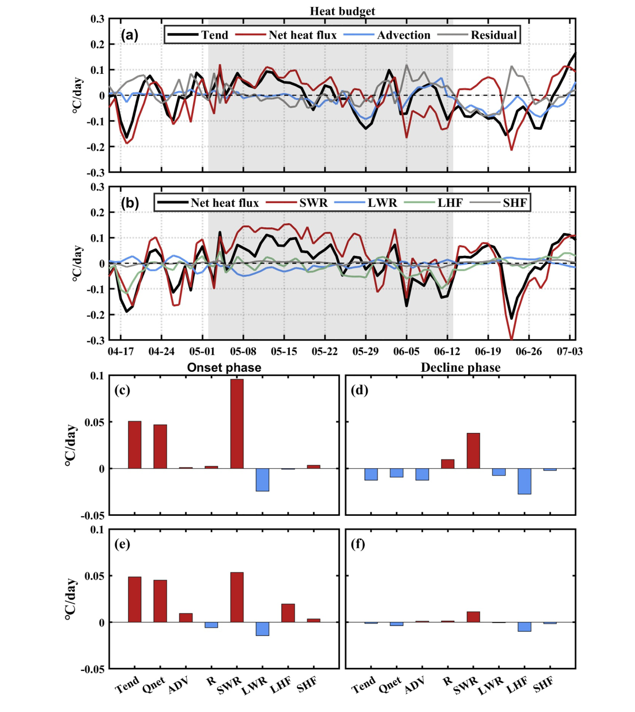
图 11。
Figure 11.
（a）南海北部陆架混合层热收支各项的逐日演变（单位：°C/天）。
(a) The daily evolution of the mixed‐layer heat budget terms (units: °C/day) in the northern shelf of the South China Sea.
阴影表示海洋热浪发生的时段。
Shading represents the period of marine heatwave.
黑线表示混合层温度变化率，红线表示净表面热通量，蓝线表示水平平流，灰线表示残差项。
The black line represents the tendency of the mixed layer temperature, the red line represents the net surface heat flux, the blue line represents horizontal advection, and the gray line denotes the residual term.
（b）混合层热收支中净表面热通量项的各分量（单位：°C/天）。
(b) The components of net surface heat flux term (units: °C/day) of the mixed‐layer heat budget.
黑线表示净热通量，红线表示短波辐射，蓝线表示长波辐射，灰线表示感热通量，绿线表示潜热通量。
The black line represents net heat flux, the red line represents shortwave radiation, the blue line represents longwave radiation, the gray line represents sensible heat flux and the green line represents latent heat flux.
（c–d）
(c–d)
MHW-21 的发展阶段和衰退阶段，混合层热收支各项的平均贡献。
Mean contributions of individual terms in the mixed‐layer heat budget during the onset and decline phases of the MHW‐21.
（e–f）
(e–f)
同（c–d），但所示为 20–90 天季节内振荡分量。
Same as (c–d), but for components of 20–90‐day intraseasonal oscillation.
为确定季节内振荡在 MHW-21 期间混合层热收支中的作用，我们分析了其发展阶段和衰退阶段热收支的 20–90 天分量。
To determine the role of ISOs in the mixed‐layer heat budget during MHW‐21, we analyze the 20–90‐day components of the heat budget in the onset phase and decline phase.
在发展阶段（图 11e），20–90 天海表温度变化率为 0.049°C/天，占总海表温度变化率的 90% 以上。
During the onset phase (Figure 11e), the 20–90‐day SST tendency was 0.049°C/day, accounting for over 90% of the total SST tendency.
20–90 天净热通量达到 0.045°C/天，约占 20–90 天海表温度变化率的 92%。
The 20–90‐day net heat flux reached 0.045°C/day, contributing approximately as much as 92% to the 20–90‐day SST tendency.
20–90 天净热通量的分量表明，短波辐射（0.053°C/天）的贡献最大，其次是潜热通量，对应的温度变化率为 0.02°C/天。
The component of the 20–90‐day net heat flux demonstrates that SWR (0.053°C/day) was the most significant contributor, followed by the LHF with a tendency of 0.02°C/day.
相比之下，长波辐射产生冷却作用，而感热通量的作用可以忽略。
In contrast, LWR exerted a cooling effect, while SHF was negligible.
在衰退阶段，20–90 天海表温度变化率的贡献由正转负（补充材料 S1 中的图 S4），因此其对海表温度变化率的平均影响相对较小（图 11f）。
During the decline phase, the contribution of the 20–90‐day SST tendency transitioned from positive to negative (Figure S4 in Supporting Information S1), resulting in a relatively small average impact on the SST tendency (Figure 11f).
这些发现强调，20–90 天季节内振荡分量在 MHW-21 开始阶段驱动混合层增暖方面发挥重要作用，主要通过增强短波辐射和潜热通量实现。
These findings highlight the important role of the 20–90‐day ISO component in driving mixed layer warming during the onset of MHW‐21, primarily through enhanced SWR and LHF.
根据上述分析，20–90 天季节内振荡和低频海表温度异常在 MHW-21 的发展中发挥了不同但互补的作用。
Based on the above analysis, the 20–90‐day ISO and low‐frequency SSTA exhibited distinct but complementary roles in the development of MHW‐21.
低频增暖提供了必要的热背景，为海洋热浪的发生创造了有利条件。
The low‐frequency warming provided a necessary thermal background, creating favorable conditions for the occurrence of the MHWs.
相比之下，季节内海表温度变率通过增强表面热通量，更直接地促进增暖趋势，从而成为决定海洋热浪强度和持续时间的主要驱动因素。
In contrast, intraseasonal SST variability contributed more directly to the warming trend through enhanced surface heat fluxes, thus acting as a primary driver of the MHW's intensity and duration.
这两个分量共同调节了 MHW-21 的发生与演变。
Together, these two components jointly modulated the occurrence and evolution of MHW‐21.
4. 讨论与结论
4. Discussion and Conclusion
近几十年来，南海北部陆架海洋热浪事件愈发频繁，严重威胁当地生态系统和人类生计（Z. Chen et al., 2025; Yao et al., 2020）。
The NSCS has experienced an increasing frequency of MHW events in recent decades, posing serious threats to local ecosystems and human livelihoods (Z. Chen et al., 2025; Yao et al., 2020).
然而，现有关于这些事件驱动机制的研究主要聚焦年际和季节尺度，对季节内变率的作用仍认识不足（Q. Wang et al., 2022; Wang et al., 2023）。
However, current research on the driving mechanisms of these events has primarily focused on interannual and seasonal timescales, while the role of intraseasonal variability remains poorly understood (Q. Wang et al., 2022; Wang et al., 2023).
季节内振荡对海洋热浪的开始和演变具有关键的调节作用，其影响不应被忽视。
ISOs exert a critical modulating influence on the onset and evolution of MHWs, and their influence should not be overlooked.
这一认识缺口给海洋热浪的预测和预警带来重大挑战。
This knowledge gap presents significant challenges for the prediction and early warning of MHWs.
本研究从季节内尺度出发，考察 MJO 对南海北部陆架春季海洋热浪的调节作用，从而有助于更全面地理解这些极端海洋事件的驱动机制。
In this study, we investigate the modulation of spring MHWs by the MJO over the NSCS from an intraseasonal perspective, thus contributing to a more comprehensive understanding of the driving mechanisms underlying these extreme oceanic events.
MJO 的不同位相对大气环流产生不同影响，进而对南海北部陆架海洋热浪的发生造成不同作用。
Different MJO phases exert distinct influences on atmospheric circulation, thereby leading to varied impacts on MHW occurrence in the NSCS.
统计结果显示，MJO 第 2、3 位相与海洋热浪发生概率显著升高相关，其中第 2 位相可使平均发生概率提高多达 60%。
Statistical results show that MJO phases 2 and 3 are associated with a significantly increased probability of MHW occurrence, with phase 2 increasing the average probability by up to 60%.
在这些位相，印度洋上空对流增强，抑制了南海北部陆架上空的局地对流，导致向下短波辐射增强、海面风减弱；两者均促进混合层增暖，有利于海洋热浪发展。
During these phases, enhanced convection over the Indian Ocean suppresses local convection over the NSCS, resulting in increased downward SWR and weakened surface winds, both of which promote mixed‐layer warming and favor the development of MHWs.
对南海北部陆架 28 次大范围海洋热浪事件的进一步分析发现，受 MJO 第 2、3 位相影响的事件都伴随季节内暖事件，其持续时间显著更长、强度显著更高，均超过未与 MJO 第 2、3 位相相关的事件。
Further analysis of 28 large‐scale MHW events in the NSCS reveals that those influenced by MJO phases 2 and 3 are consistently accompanied by intraseasonal warm events and exhibit significantly longer durations and higher intensities than those not associated with MJO phases 2 and 3.
超前—滞后分析表明，MJO 通过影响对流活动和局地风速，进而改变短波辐射与潜热通量，驱动季节内海表温度变率，从而调节海洋热浪事件的发生。
Lead–lag analysis indicates that the MJO drives intraseasonal SST variability by influencing convective activity and local wind speed, which lead to SWR and LHF, thereby modulating the occurrence of MHW events.
对极端 MHW-21 事件的个例研究表明，20–90 天季节内振荡和低频海表温度异常在其发展中发挥了不同但互补的作用。
A case study of the extreme MHW‐21 event reveals that the 20–90‐day ISO and low‐frequency SSTA played distinct but complementary roles in its development.
由 MJO 引起的季节内海表温度变率对这次极端事件的演变具有显著的调节作用。
The intraseasonal SST variability induced by the MJO exerted a significant modulatory influence on the evolution of this extreme event.
具体而言，在 MJO 第 2、3 位相，印度洋上空活跃的对流抑制了南海北部陆架上空的对流，使向下短波辐射增强，并在混合层中产生明显的增暖趋势。
Specifically, active convection over the Indian Ocean during MJO phases 2 and 3 suppressed convection over the NSCS, leading to enhanced downward SWR and a pronounced warming tendency in the mixed layer.
值得注意的是，在 MHW-21 的发展阶段，仅 20–90 天短波辐射异常就贡献了混合层总增暖率的 103.9%（总增暖率为 0.051°C/天，其中 0.053°C/天来自该异常），凸显季节内过程在触发这次事件中的主导作用。
Notably, during the onset phase of MHW‐21, the 20–90‐day SWR anomaly alone contributed 103.9% of the total mixed‐layer warming tendency (0.053°C/day out of 0.051°C/day), underscoring the dominant role of intraseasonal processes in triggering the event.
此外，Y. Chen et al.（2023）指出，2021 年 5 月下旬，MJO 在海洋大陆上空消散。
In addition, Y. Chen et al. (2023) reported that the MJO dissipated over the Maritime Continent in late May 2021.
此后不久，热带气旋“Choi‐wan”在南海生成，进一步抑制北部地区的对流。
Shortly afterward, Tropical Cyclone “Choi‐wan” developed over the SCS, further suppressing convection in the northern region.
随着该热带气旋于 6 月初北移，它触发了南海夏季风的爆发。
As the TC moved northward in early June, it triggered the onset of the SCS summer monsoon.
由此造成的潜热通量减小及相关的上升流使混合层冷却，进而促使海洋热浪结束。
The resulting decrease in LHF and the associated upwelling acted to cool the mixed layer, thereby contributing to the termination of the MHW.
与此同时，与季节循环相关的低频海表温度异常建立了有利的热背景，支持 MHW-21 事件的发生。
Meanwhile, the low‐frequency SSTA linked to seasonal cycle established a favorable thermal background that supported the onset of the MHW‐21 event.
ENSO 等大尺度气候模态的位相转换可以显著影响南海低频海表温度变率，进而调节海洋热浪的发生（Liu et al., 2022）。
Phase shifts of large‐scale climate modes such as ENSO can significantly influence low‐frequency SST variability in the SCS, thereby modulating the occurrence of MHWs (Liu et al., 2022).
我们分析了不同 ENSO 位相下，MJO 对南海北部陆架海洋热浪发生概率的影响。
We analyzed the impact of the MJO on the probability of MHW occurrence over the NSCS under different ENSO phases.
结果表明，在拉尼娜年份，当 MJO 处于第 2 至第 5 位相时，海洋热浪的发生概率显著增加（补充材料 S1 中的图 S5）。
The results show that during La Niña years, the probability of MHW occurrence significantly increases when the MJO is in phases 2 to 5 (Figure S5 in Supporting Information S1).
因此，有必要考虑不同时间尺度气候模态的共同作用，以研究海洋热浪的驱动机制。
Therefore, it is necessary to investigate the driving mechanisms of MHWs by considering the combined effects of climate modes operating at different timescales.
本研究阐明了季节内振荡，尤其是 MJO，在南海北部陆架春季海洋热浪的发生和发展中的关键作用。
This study has elucidated the key role of ISOs, particularly the MJO, in the occurrence and development of spring MHWs in the NSCS.
值得注意的是，近期研究表明，在全球变暖背景下，MJO 的可预测性正在提高，其位相和振幅的可靠预报提前期延长（Du et al., 2024）。
Notably, recent studies have shown that the predictability of the MJO is increasing under global warming, with extended lead times for reliable forecasts of MJO phases and amplitude (Du et al., 2024).
这种可预测性的提高有望显著促进我们理解和预报南海北部陆架的海洋热浪。
This enhanced predictability holds significant potential for advancing our understanding and forecasting of MHWs in the NSCS.
准确预测 MJO 可为海洋热浪事件提供更早的预警，为该地区的海洋生态系统管理和减灾工作提供重要支持；当地社区与经济活动都与海洋健康密切相关。
Accurate MJO predictions could enable earlier warnings for MHW events, providing essential support for marine ecosystem management and disaster mitigation efforts in this region, where communities and economies are closely linked to marine health.
由于海洋热浪的形成机制复杂，未来需要研究不同尺度扰动之间的相互作用及其对海洋热浪的影响，尤其应关注年际背景变率（如 ENSO）和天气尺度事件（如热带气旋）对海洋热浪强度与频率的影响（Han et al., 2023; Liu et al., 2022）。
Since the formation mechanisms of MHWs are complex, future research is needed to investigate the interactions between different scale disturbances and their impact on MHWs, particularly focusing on the influence of interannual background variability (e.g., ENSO) and synoptic‐scale events (e.g., tropical cyclones) on the intensity and frequency of MHWs (Han et al., 2023; Liu et al., 2022).
此外，进一步研究不同气候模态与季节内振荡之间的相互作用，对于理解它们对海洋热浪的共同影响至关重要（Dutheil et al., 2024）。
Additionally, further exploration of the interactions between different climate modes and ISOs is crucial to understand their combined impact on MHWs (Dutheil et al., 2024).
还必须认识到年际背景变率对极端海表温度事件发生的贡献。
It is also essential to recognize the contribution of interannual background variability to the occurrence of extreme SST events.
通过采用综合的多尺度视角，并研究不同扰动之间复杂的相互作用，我们可以更好地理解南海北部陆架海洋热浪的形成与演变。
By adopting a comprehensive multi‐scale perspective and investigating the complex interactions between different disturbances, we can better understand the formation and evolution of MHWs in the NSCS.
本研究主要强调，MJO 在第 2、3 位相通过调节海气热通量促进海洋热浪发生的作用。
This study primarily highlights the role of the MJO in promoting MHWs during phases 2 and 3 through its modulation of air– sea heat fluxes.
然而，不同 MJO 位相下海洋动力过程的影响仍需进一步研究。
However, the influence of oceanic dynamical processes under different MJO phases requires further investigation.
未来研究应使用更高分辨率的海洋模式，开展详细的混合层热收支分析，从而更定量地评估大气和海洋对海洋热浪发展的贡献。
Future research should utilize higher‐resolution ocean models to conduct detailed mixed‐layer heat budget analyses, enabling a more quantitative assessment of atmospheric and oceanic contributions to MHW development.
此外，海气背景条件的季节差异可能导致 MJO 对海洋热浪的影响随季节而异。
In addition, seasonal differences in the ocean–atmosphere background conditions may lead to varying MJO impacts on MHWs.
例如，冬季南海北部陆架受冬季风主导，冬季风改变区域环流和海气相互作用，进而影响混合层热收支，使 MJO 活动对海洋热浪的作用不同于春季（Wu & Chen, 2015）。
For example, during winter, when the winter monsoon dominates in the NSCS, it modifies regional circulation and air–sea interactions, thereby affecting the mixed‐layer heat budget and resulting in different effects of MJO activity on MHWs compared to spring (Wu & Chen, 2015).
理解这些季节性调节作用，对于改进不同时期海洋热浪的预测至关重要。
Understanding these seasonal modulations is essential for improving the prediction of MHWs across different time periods.
数据可用性声明
Data Availability Statement
本研究使用的所有数据集均可公开获取。
All data sets used in this study are publicly available.
逐日 OISST V2.1 数据由美国国家海洋和大气管理局国家环境信息中心提供：https://www.ncei.noaa.gov/products/optimum‐interpolation‐sst（Huang et al., 2021）。
The daily OISST V2.1 data are provided by the NOAA National Centers for Environmental Information https://www.ncei.noaa.gov/products/optimum‐interpolation‐sst (Huang et al., 2021).
GLORYS12V1 数据来自欧盟哥白尼海洋服务信息平台：https://doi.org/10.48670/moi‐00021。
The GLORYS12V1 data are obtained from the E.U. Copernicus Marine Service Information at https://doi.org/10.48670/moi‐00021.
ERA5 的大气变量、10 m 风速、总云量和净热通量取自 https://doi.org/10.24381/cds.adbb2d47（Hersbach et al., 2023a）。
The atmospheric components, 10‐m wind speed, TCC, net heat flux of ERA5 are obtained from https://doi.org/10.24381/cds.adbb2d47 (Hersbach et al., 2023a).
ERA5 的垂直速度、850 hPa 风及位势高度取自 https://doi.org/10.24381/cds.bd0915c6（Hersbach et al., 2023b）。
The vertical velocity, 850 hPa wind and geopotential heights of ERA5 are accessed at https://doi.org/10.24381/cds.bd0915c6 (Hersbach et al., 2023b).
RMM 指数取自 http://www.bom.gov.au/climate/mjo/。
The RMM index are obtained from http://www.bom.gov.au/climate/mjo/.
逐日向外长波辐射数据可从 https://psl.noaa.gov/data/gridded/data.olrcdr.interp.html 获取。
Daily OLR data are available at https://psl.noaa.gov/data/gridded/data.olrcdr.interp.html.
致谢：感谢三位匿名审稿人提出的宝贵意见。
Acknowledgments We thank the three anonymous reviewers for their valuable feedback.
本研究得到中国国家自然科学基金（项目编号 42476022 和 42476199）、广东省基础与应用基础研究基金（项目编号 2024B1515040024）、国家重点研发计划（项目编号 2023YFF0805300 和 2022YFC3105004）、中国科学院南海海洋研究所（项目编号 SCSIO2023HC07 和 SCSIO202201），以及由国家自然科学基金船时共享项目（项目编号 42149910）资助的开放研究航次计划 NORC2022‐10 和 NORC2022‐303 的支持。
This work was supported by the National Natural Science Foundation of China (grants 42476022 and 42476199), the Guangdong Basic and Applied Basic Research Foundation (grant 2024B1515040024), the National Key Research and Development Program of China (grants 2023YFF0805300 and 2022YFC3105004), the South China Sea Institute of Oceanology, Chinese Academy of Sciences (grants SCSIO2023HC07 and SCSIO202201), and the Open Research Cruise programs NORC2022‐10 and NORC2022‐303, funded by the NSFC Shiptime Sharing Project (grant 42149910).
以下论文的补充材料：
Supporting Information for
季节内振荡调制南海北部春季海洋热浪
Intraseasonal oscillations modulate spring marine heatwaves in the northern South China Sea
¹ 中国科学院南海海洋研究所热带海洋环境国家重点实验室，中国广州 510301。
¹ State Key Laboratory of Tropical Oceanography, South China Sea Institute of Oceanology, Chinese Academy of Sciences, Guangzhou 510301, China.
² 中国科学院大学，中国北京 100049。
² University of Chinese Academy of Sciences, Beijing 100049, China.
本文件内容
Contents of this file
图 S1 至图 S5
Figures S1 to S5
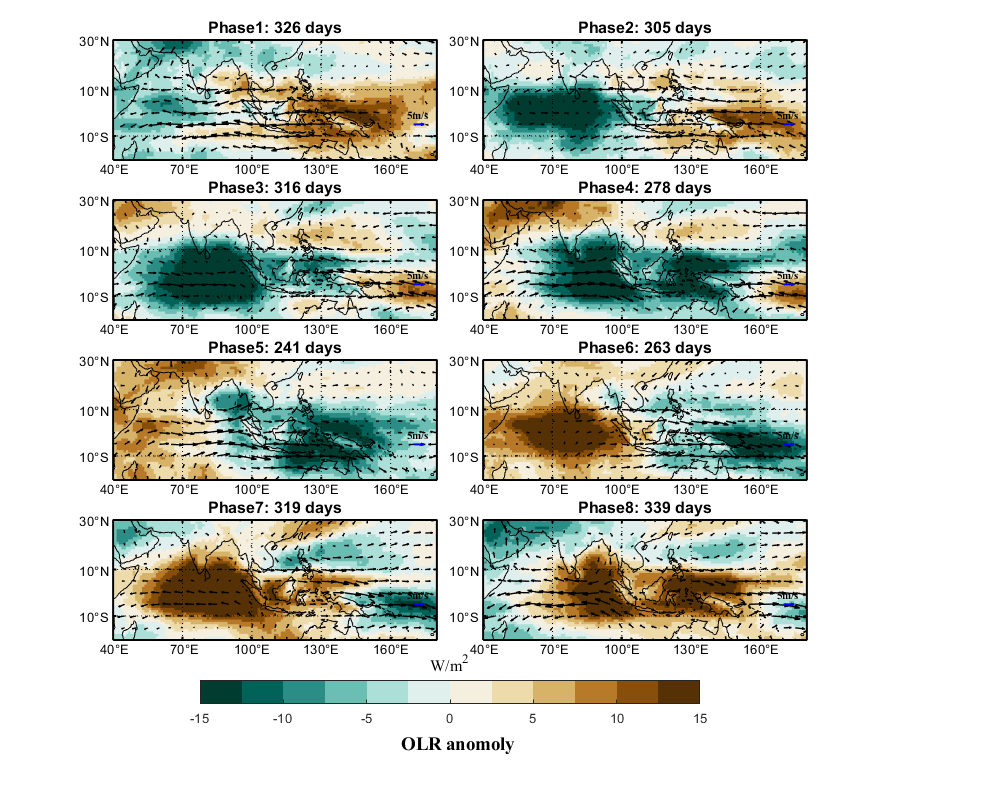
第 1 位相：326 天
Phase1: 326 days
第 2 位相：305 天
Phase2: 305 days
第 3 位相：316 天
Phase3: 316 days
第 4 位相：278 天
Phase4: 278 days
第 5 位相：241 天
Phase5: 241 days
第 6 位相：263 天
Phase6: 263 days
第 7 位相：319 天
Phase7: 319 days
第 8 位相：339 天
Phase8: 339 days
向外长波辐射异常（W/m²）
OLR anomaly (W/m²)
图 S1。
Figure S1.
1982—2022 年春季 RMM 振幅大于 1 时，不同 MJO 位相的向外长波辐射异常（填色，单位：W/m²）与 850 hPa 风（箭头，单位：m/s）的合成结果。
The composite OLR anomalies (shading, units: W/m²) and 850hpa wind (arrows, units: m/s) in different phases of MJO, associated with the amplitude of RMM are greater than 1 from 1982 to 2022 in spring.
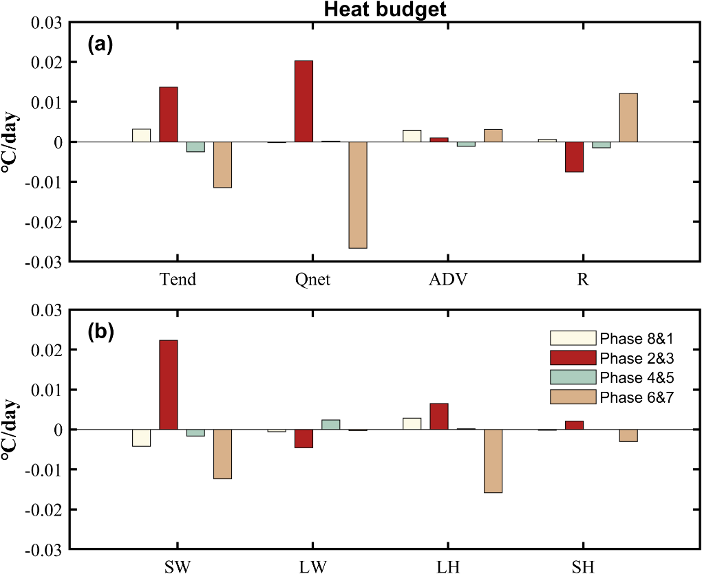
热收支
Heat budget
（a）
(a)
温度变化率
Tend
净表面热通量
Qnet
水平平流
ADV
残差项
R
（b）
(b)
短波辐射
SW
长波辐射
LW
潜热通量
LH
感热通量
SH
第 8 与第 1 位相
Phase 8&1
第 2 与第 3 位相
Phase 2&3
第 4 与第 5 位相
Phase 4&5
第 6 与第 7 位相
Phase 6&7
°C/天
°C/day
图 S2。
Figure S2.
不同 MJO 位相期间的合成结果。
Composite results during different MJO phases.
（a）混合层热收支各项（单位：°C/天），从左到右依次为海表温度变化率、净表面热通量、水平平流和残差项。
(a) Mixed layer heat budget terms (units: °C/day), including (from left to right): SST tendency, net surface heat flux, horizontal advection, and residual.
（b）净表面热通量的各分量（单位：°C/天），从左到右依次为短波辐射 Q_SW、长波辐射 Q_LW、潜热通量 Q_LH 和感热通量 Q_SH，表示它们各自对混合层温度变化的贡献。
(b) Components of the net surface heat flux (units: °C/day), from left to right: Q_SW, Q_LW, Q_LH and Q_SH, representing their respective contributions to mixed layer temperature changes.
为增加样本量，将对流型相似的两个相邻 MJO 位相合并，即第 8 与第 1、第 2 与第 3、第 4 与第 5，以及第 6 与第 7 位相。
To increase the sample size, two consecutive MJO phases with similar convective patterns are combined (i.e., 8&1, 2&3, 4&5, and 6&7).
黄色对应第 8 与第 1 位相，红色对应第 2 与第 3 位相，绿色对应第 4 与第 5 位相，橙色对应第 6 与第 7 位相。
Yellow corresponds to Phases 8&1, red to Phases 2&3, green to Phases 4&5, and orange to Phases 6&7.
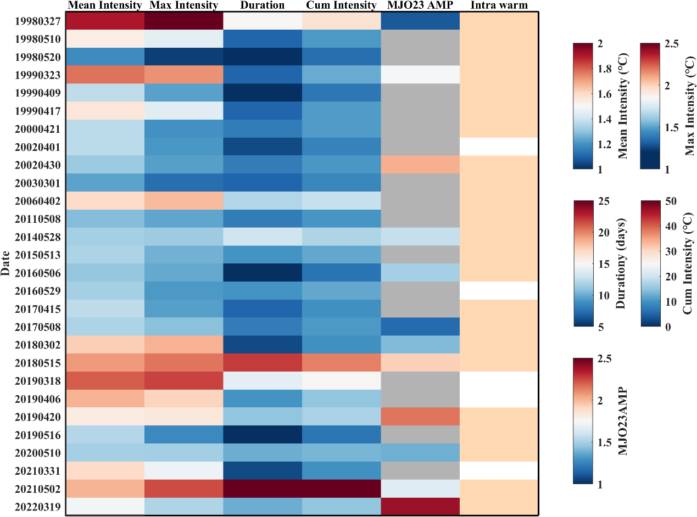
平均强度
Mean Intensity
最大强度
Max Intensity
持续时间
Duration
累积强度
Cum Intensity
MJO 第 2、3 位相振幅
MJO23 AMP
季节内暖事件
Intra warm
日期
Date
平均强度（°C）
Mean Intensity (°C)
最大强度（°C）
Max Intensity (°C)
持续时间（天）
Duration (days)
累积强度（°C）
Cum Intensity (°C)
MJO 第 2、3 位相振幅
MJO23AMP
图 S3。
Figure S3.
1982—2022 年春季南海北部陆架海洋热浪的特征。
Characteristics of MHWs in the NSCS in spring from 1982–2022.
灰色表示未伴随活跃 MJO 第 2、3 位相（振幅大于 1）的海洋热浪。
Grey indicates MHWs without active MJO phases 2 and 3 (amplitude>1).
黄色表示发生季节内暖事件，白色表示未发生。
Yellow indicates the occurrence of intraseasonal warm events, while white indicates their absence.
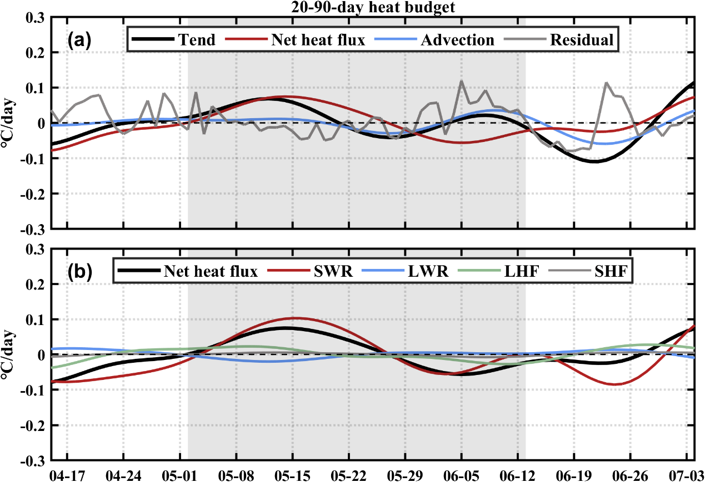
20–90 天热收支
20-90-day heat budget
（a）
(a)
温度变化率
Tend
净表面热通量
Net heat flux
水平平流
Advection
残差项
Residual
（b）
(b)
净表面热通量
Net heat flux
短波辐射
SWR
长波辐射
LWR
潜热通量
LHF
感热通量
SHF
°C/天
°C/day
图 S4。
Figure S4.
（a）南海北部陆架 20–90 天混合层热收支各项的逐日演变（单位：°C/天）。
(a) The daily evolution of 20–90-day mixed-layer heat budget terms (units: °C/day) in the NSCS.
阴影表示海洋热浪发生的时段。
Shading represents the period of MHW.
黑线表示混合层温度变化率，红线表示净表面热通量，蓝线表示水平平流，灰线表示残差项。
The black line represents the tendency of the mixed layer temperature, the red line represents the net surface heat flux, the blue line represents horizontal advection, and the gray line denotes the residual term.
（b）混合层热收支中净表面热通量项的各分量（单位：°C/天）。
(b) The components of net surface heat flux term (units: °C/day) of the mixed-layer heat budget.
黑线表示净热通量，红线表示短波辐射，蓝线表示长波辐射，灰线表示感热通量，绿线表示潜热通量。
The black line represents net heat flux, the red line represents SWR, the blue line represents LWR, the gray line represents SHF and the green line represents LHF.
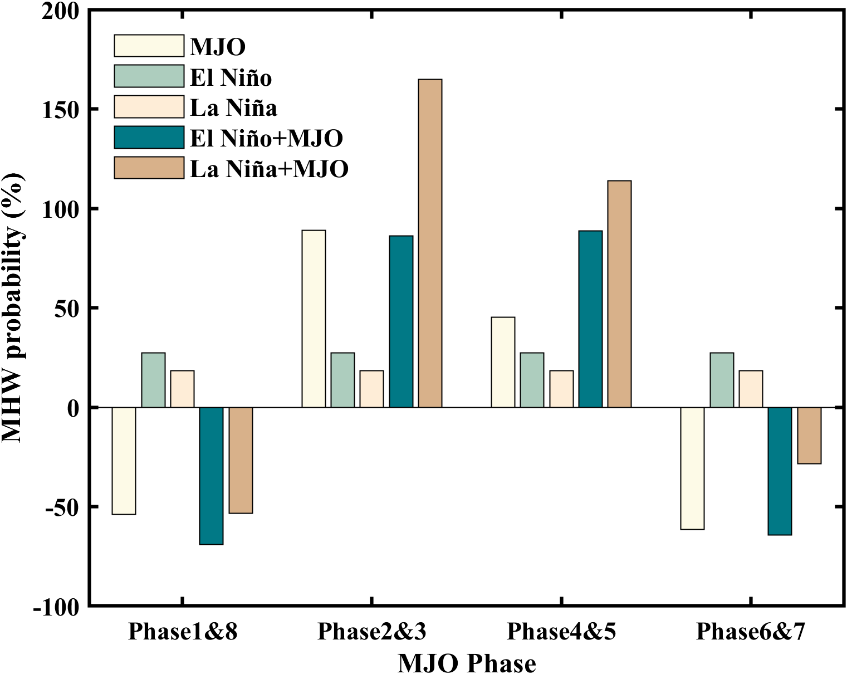
海洋热浪发生概率（%）
MHW probability (%)
MJO 位相
MJO Phase
MJO
MJO
厄尔尼诺
El Niño
拉尼娜
La Niña
厄尔尼诺 + MJO
El Niño+MJO
拉尼娜 + MJO
La Niña+MJO
第 1 与第 8 位相
Phase1&8
第 2 与第 3 位相
Phase2&3
第 4 与第 5 位相
Phase4&5
第 6 与第 7 位相
Phase6&7
图 S5。
Figure S5.
不同条件下海洋热浪发生概率相对于气候态的变化：单独考虑 MJO、单独考虑厄尔尼诺／拉尼娜，以及不同位相下厄尔尼诺与 MJO、拉尼娜与 MJO 的共同作用。
The MHW occurrence probability relative to the climatology under different conditions: MJO alone, El Niño/La Niña alone, and the combined effects of El Niño–MJO and La Niña–MJO at different phases.